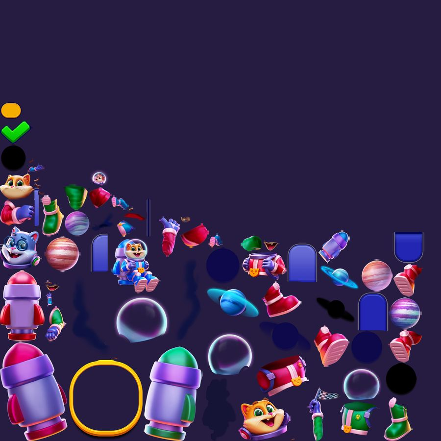
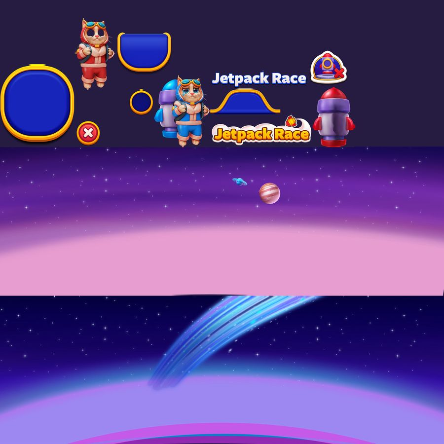

Đua Jetpack 3 chặng (Jetpack Race With Stage)
Chia đua thành ba đích ngắn và cho phép cấu hình chế độ không mất chuỗi, giảm hoặc tăng sức ép tùy luật event.
Chưa có case chính trong hai lượt review 15–16/11. Nội dung theo mã/config; ảnh ngữ cảnh không được tính thành playtest tính năng. Xem bằng chứng và phần còn thiếu.
Thiết kế chi tiết
Tóm tắt thiết kế
Chia đua thành ba đích ngắn và cho phép cấu hình chế độ không mất chuỗi, giảm hoặc tăng sức ép tùy luật event.
Join stage → thắng level → nhận quà → chuyển stage → lặp chặng cuối trong giới hạn.
Thiết kế đọc từ dossier và nguồn đã đối chiếu. Outcome là expected; câu ghi round2 là actual theo case, không phải full-feature pass.
Chưa có ảnh chụp màn hình cho tính năng này trong nguồn đã kiểm. Ảnh tài nguyên (nếu có) nằm ở hồ sơ hình ảnh; không thay cho screenshot playtest.
Luồng người chơi từng bước
- 01
Tiến trong chặng
Người chơi và hệ thốngThắng level để tăng điểm chặng.
Điều kiện / luật: currentStage 1/2/3 và maxReachableStageScore đến từ instance.
Kết quả theo đặc tả: Tiến độ không bị lẫn với số stage đã thắng.
- 02
Xét luật thua hiện hành
Người chơi và hệ thốngThua level khi đang đua.
Điều kiện / luật: StreakDisabled = true trong default: phải kiểm cờ trước khi áp reset chuỗi.
Kết quả theo đặc tả: Không bê luật mất chuỗi của Jetpack Race bản thường sang mọi trường hợp.
- 03
Nhận quà theo stage
Người chơi và hệ thốngHoàn thành chặng và nhận bộ quà.
Điều kiện / luật: Default stage 1:
 100 coin + 15 phút, stage 2: 250 coin + 30 phút, stage 3: 500 coin + Shuffle + Undo + 45 phút; LastStageWinLimit = 100.
100 coin + 15 phút, stage 2: 250 coin + 30 phút, stage 3: 500 coin + Shuffle + Undo + 45 phút; LastStageWinLimit = 100.Kết quả theo đặc tả: Reward và quyền lặp gắn stage hiện tại.
Quy tắc cần nắm
| Quy tắc | Hành vi theo nguồn | Căn cứ |
|---|---|---|
| Tiến trong chặng | currentStage 1/2/3 và maxReachableStageScore đến từ instance. | |
| Xét luật thua hiện hành | StreakDisabled = true trong default: phải kiểm cờ trước khi áp reset chuỗi. | |
| Nhận quà theo stage | Default stage 1: 100 coin + 15 phút, stage 2: 250 coin + 30 phút, stage 3: 500 coin + Shuffle + Undo + 45 phút; LastStageWinLimit = 100. |
Số liệu & phần thưởng
Phần thưởng
PHẦN THƯỞNG THEO CHẶNG (JetpackRaceWithStageConfigModel.json)
| Chặng | Điều kiện | Phần thưởng |
|---|---|---|
| Chặng 1 | Đạt maxReachableStageScore của chặng 1 (server) |  100Coin 100Coin  ∞15 phútUnlimited Lives ∞15 phútUnlimited Lives |
| Chặng 2 | Đạt maxReachableStageScore của chặng 2 (server) | 250Coin ∞30 phútUnlimited Lives |
| Chặng 3 | Đạt maxReachableStageScore của chặng 3 (server) | 500 coin  1 Shuffle 1 Shuffle  1 Undo 1 Undo  45 phút Unlimited Lives 45 phút Unlimited Lives |
| Sau 100 lần thắng chặng 3 | LastStageClaimCount đạt LastStageWinLimit = 100 | Không còn thưởng sự kiện khóa (LastStageWinLimitReached) |
PHẦN THƯỞNG THEO CHẶNG KHI COLLECTION BẬT (…RewardModelsWithCollection)
| Chặng | Điều kiện | Phần thưởng |
|---|---|---|
| Chặng 1 | Về đích chặng 1 khi Collection đang chạy |  1 gói thẻ Collection loại 1 100 coin 15 phút Unlimited Lives 1 gói thẻ Collection loại 1 100 coin 15 phút Unlimited Lives |
| Chặng 2 | Về đích chặng 2 khi Collection đang chạy |  1 gói thẻ Collection loại 2 250 coin 30 phút Unlimited Lives 1 gói thẻ Collection loại 2 250 coin 30 phút Unlimited Lives |
| Chặng 3 | Về đích chặng 3 khi Collection đang chạy | 500 coin 1 Shuffle 1 Undo 45 phút Unlimited Lives (giống bản thường) |
TRẠNG THÁI, POPUP VÀ KẾT QUẢ THAM GIA
| Nhóm | Giá trị | Ghi chú |
|---|---|---|
| JetpackRaceWithStageStateType | Disable=0, ProgressNotEnough=1, NoCache=2, Join=3, InProgress=4, LocalTimeIsUp=5, RemoteTimeIsUp=6, ClaimedLocally=7, LastStageWinLimitReached=8 | Có thêm trạng thái trần thắng so với bản thường |
| JetpackRaceWithStagePopUpState | Disabled=0, Join=1, FirstShowEver=2, FirstShow=3, InProgress=4, Result=5, JoinIntroduced=6 | Layout popup theo tình huống |
| JetpackRaceWithStageImpressionSource | None=0, LobbyIcon=1, EventJoin=2, Result=3, StepIncrease=4, TryAgain=5 | Nguồn mở popup gửi kèm analytics |
| JoinResult | ConnectionFail=0, EventEnded=1, Success=2 | Kết quả gọi tham gia |
Phần thưởng theo code
| Ngữ cảnh | Phần thưởng | Evidence |
|---|---|---|
| Về đích chặng 1 | 100 Coin Unlimited Life 15 phút (bản Collection thêm 1 CollectionPack loại 1) | JetpackRaceWithStageConfigModel.json Stage1RewardModels |
| Về đích chặng 2 | 250 Coin Unlimited Life 30 phút (bản Collection thêm 1 CollectionPack loại 2) | JetpackRaceWithStageConfigModel.json Stage2RewardModels |
| Về đích chặng 3 | 500 Coin 1 Shuffle 1 Undo Unlimited Life 45 phút | JetpackRaceWithStageConfigModel.json Stage3RewardModels |
| Đạt trần LastStageWinLimit | Không còn thưởng sự kiện khoá (state LastStageWinLimitReached) | JetpackRaceWithStageService.CheckLastStageWinLimitExceeded |
Số liệu chính
| Chỉ số | Giá trị | Nguồn |
|---|---|---|
| Level mở sự kiện | 80 | JetpackRaceWithStageConfigModel.json: FirstLevelToShow |
| IsEnabled mặc định | false (chờ remote config bật) | JetpackRaceWithStageConfigModel.json: IsEnabled |
| EventType (tournamentType) | 6 | JetpackRaceWithStageConfigModel.json: EventType |
| MagicLabEventType | 19 | JetpackRaceWithStageConfigModel.json: MagicLabEventType |
| Chế độ mất chuỗi | StreakDisabled = true (mặc định KHÔNG mất chuỗi) | JetpackRaceWithStageConfigModel.json: StreakDisabled |
| Trần thắng ở chặng cuối | 100 | JetpackRaceWithStageConfigModel.json: LastStageWinLimit |
| Số chặng | 3 | JetpackRaceWithStageService.GetRewardsByStage |
| Thưởng chặng 1 | 100 coin, 15 phút Unlimited Lives | JetpackRaceWithStageConfigModel.json: Stage1RewardModels |
| Thưởng chặng 2 | 250 coin, 30 phút Unlimited Lives | JetpackRaceWithStageConfigModel.json: Stage2RewardModels |
| Thưởng chặng 3 | 500 coin, 1 Shuffle, 1 Undo, 45 phút Unlimited Lives | JetpackRaceWithStageConfigModel.json: Stage3RewardModels |
| Gói thẻ thêm ở chặng 1 và 2 | loại 1 và loại 2 | JetpackRaceWithStageConfigModel.json: Stage1/Stage2RewardModelsWithCollection |
| Tổng coin nếu qua đủ ba chặng | 850 coin | JetpackRaceWithStageConfigModel.json: Stage1/2/3RewardModels |
| Tổng Unlimited Lives nếu qua đủ ba chặng | 90 phút | JetpackRaceWithStageConfigModel.json: Stage1/2/3RewardModels |
| Số trạng thái sự kiện | 9 (Disable=0 … LastStageWinLimitReached=8) | JetpackRaceWithStageStateType |
| Số layout popup | 7 (Disabled=0 … JoinIntroduced=6) | JetpackRaceWithStagePopUpState |
| Số kết quả tham gia | 3 (ConnectionFail=0, EventEnded=1, Success=2) | JoinResult |
| Số endpoint backend | 5 (get-jetpack-leaderboard, set-jetpack-points, join, claim, get-jetpack-endtime) | JetpackRaceWithStageRemoteService |
| Định dạng id sự kiện đọc được | jp_{0}_{1:yyyyMMdd}_{2:yyyyMMdd}, fallback 'jp_unknown_data' | JetpackRaceWithStageService.GetEventId |
| Số trường của response | 12 | JetpackRaceWithStageResponseModel |
| Số trường của cache cuộc đua | 20 | JetpackRaceWithStageCacheModel |
| Schema FlatBuffer | magicsort.schemas.v1.liveops.jet_pack_v2 | PseudoC/Assembly-CSharp/MagicSort/schemas/v1/liveops/jet_pack_v2 |
| Tên khối đồng bộ | JetpackRaceWithStageModel | JetpackRaceWithStageDataService |
Các quyết định trong luồng
| Tình huống | Cách xử lý theo nguồn | Căn cứ |
|---|---|---|
| Có thể gọi đây chỉ là reskin Jetpack Race không? | Không: stage, leaderboardID và StreakDisabled làm khác tiến trình và mức mất mát; cần bảng luật riêng. | Nhận định thiết kế dựa trên cơ chế, không phải kết quả A/B. |
Nhánh lỗi và phục hồi
| Điều kiện | Hành vi mong đợi | Phạm vi đã kiểm |
|---|---|---|
| Gián đoạn hoặc kết thúc Đua Jetpack 3 chặng | Mất mạng hoặc chuyển stage phải đối chiếu tournamentID/leaderboardID, không tăng stage chỉ từ animation. | Đọc source/UC; không thực hiện runtime mới trong lượt biên tập. |
Nhận định & vận dụng
Không: stage, leaderboardID và StreakDisabled làm khác tiến trình và mức mất mát; cần bảng luật riêng.
Phân tích thiết kế, chưa đo retention/conversion.
Ảnh chụp bổ sung & nguồn bằng chứng
Chưa có screenshot trong nguồn hiện có; giữ mục này để bổ sung khi có bằng chứng.
Case đầy đủ: expected, actual và ledger · Ảnh lịch sử và tài nguyên gốc
Tổng quan & điều kiện mở
Mô tả
- Jetpack Race With Stage là bản ba chặng của Jetpack Race, dùng bộ endpoint riêng /v1/*-jetpack-* và schema flatbuffer jet_pack_v2.
- Bảng xếp hạng tách riêng khỏi giải: leaderboardID độc lập với tournamentID.
- Mỗi chặng có mốc đích riêng do server gửi và một bộ phần thưởng riêng, tăng dần theo chặng.
- Chặng cuối bị giới hạn số lần thắng lặp lại để tránh cày vô hạn; đạt trần thì sự kiện khóa lại.
- Bản này mặc định bật chế độ không mất chuỗi, nghĩa là thua level không làm reset điểm.
- Có popup riêng giải thích chế độ không mất chuỗi, chỉ hiện một lần trong đời tài khoản.
- Popup tham gia có thể bị khóa nút đóng để ép người chơi vào cuộc đua.
- Sự kiện tích hợp trực tiếp với Magic Lab qua mã sự kiện riêng và với Wheel of Fortune.
- Mỗi sự kiện có một id dễ đọc dạng jp_<loại>_<ngày bắt đầu>_<ngày kết thúc> dùng cho analytics.
Mở khóa & điểm vào
JetpackRaceWithStageStateService.GetEventState(): Disable(0) nếu IsEnabled == false; ProgressNotEnough(1) nếu level < FirstLevelToShow; NoCache(2); Join(3); InProgress(4); LocalTimeIsUp(5); RemoteTimeIsUp(6); ClaimedLocally(7); LastStageWinLimitReached(8) khi đã đạt trần thắng ở chặng cuối. Client default: IsEnabled=false, EventType=6, MagicLabEventType=19, FirstLevelToShow=80, StreakDisabled=true, LastStageWinLimit=100 (Resources/defaultconfigs/JetpackRaceWithStageConfigModel.json).
Điểm vào:
- Nút lobby (IsLobbyIconVisible / IsLobbyIconVisibleAndNotIntroduced)
- Banner lobby (ShouldShowJetpackRaceWithStageBanner)
- Popup tham gia (ShouldShowJoinPopup / CanShowJoinPopupForce); có thể bị khoá nút đóng bởi CloseDisabledInJoinPopup
- Popup đua tự mở khi về lobby / mở app (ShouldOpenAutomaticallyOnLobbyReturn / ShouldOpenAutomaticallyOnSessionStart)
- Popup giải thích chế độ 'không mất chuỗi' (ShouldShowStreakDisabledPopup)
- Popup xác nhận thoát level (ShouldShowAreYouSure)
- Nguồn TryAgain sau khi thua
Các sự kiện liên quan
Luồng chi tiết theo nguồn
Cách hoạt động
- Sự kiện chỉ chạy khi IsEnabled = true (json default false) và level đạt FirstLevelToShow = 80, nếu không trạng thái là Disable (0) hoặc ProgressNotEnough (1).
- Client gọi /v1/get-jetpack-leaderboard với eventType = 6, leaderboardId và score, hoặc dùng biến thể flatbuffer.
- Server trả tournamentID, leaderboardID, startTime, finishTime, isFinished, isClaimed, userScore, maxReachableStageScore, danh sách người đua, hasUsedLimitlessLife và currentStage.
- Client tạo id dễ đọc dạng jp_{tournamentType}_{ngày bắt đầu}_{ngày kết thúc}, hoặc 'jp_unknown_data' khi thiếu dữ liệu (GetEventId).
- Tham gia gọi /v1/join-jetpack-leaderboard và trả về một trong ba kết quả: ConnectionFail (0), EventEnded (1) hoặc Success (2).
- Popup tham gia có thể không cho đóng nếu CloseDisabledInJoinPopup bật; analytics ghi lại cờ close_button_enabled.
- Mỗi lần thắng level, điểm tăng 1 và cờ đồng bộ bị tắt để lần lấy bảng kế đẩy điểm; điểm cũng có thể đẩy riêng qua /v1/set-jetpack-points.
- Nếu đang ở chặng cuối, mỗi lần thắng còn tăng bộ đếm LastStageClaimCount và so với LastStageWinLimit = 100.
- Đạt trần thì trạng thái chuyển LastStageWinLimitReached (8) và người chơi không nhận thêm thưởng.
- Khi thua hoặc bỏ level, điểm chỉ reset nếu chế độ mất chuỗi đang bật; mặc định StreakDisabled = true nên điểm được giữ.
- Phần thưởng chọn theo chặng: chặng 1 trả 100 coin và 15 phút Unlimited Lives, chặng 2 trả 250 coin và 30 phút, chặng 3 trả 500 coin, 1 Shuffle, 1 Undo và 45 phút.
- Khi Collection bật, chặng 1 thêm 1 gói thẻ loại 1 và chặng 2 thêm 1 gói thẻ loại 2; chặng 3 không đổi.
- Nhận thưởng gọi /v1/claim-jetpack-leaderboard, sau đó đặt cờ đã nhận ở máy và tăng kỷ lục thắng.
- Analytics jetpack_race_staged_won ghi tournament_id, leaderboard_id, readable_event_id, stage và race_rank.
- Hết giờ, trạng thái chuyển LocalTimeIsUp (5) rồi RemoteTimeIsUp (6); client gọi /v1/get-jetpack-endtime để lưu NextRaceFinishTime.
- Bộ hẹn giờ tự lấy lại bảng khi hết hạn nên chuỗi cuộc đua chạy liên tục.
Luồng chi tiết theo code
InitializeData() nạp cache + CacheProfileImages(). IntervalUpdate → ShouldSendGetRequest() → SendGetRequest()/GetRequest() gọi JetpackRaceWithStageRemoteService.Get(eventType, leaderboardId, score) (hoặc GetWithFlatBuffer) tới jetpackRaceWithStageGetUrl (/v1/get-jetpack-leaderboard). Response JetpackRaceWithStageResponseModel{tournamentID, leaderboardID, tournamentType, startTime, finishTime, isFinished, isClaimed, userScore, maxReachableStageScore, players[], hasUsedLimitlessLife, currentStage}. ChangeTournamentCache(response) ghi JetpackRaceWithStageCacheModel (có thêm LeaderboardId, CurrentStage, EventType). GetEventId() tạo id dễ đọc dạng 'jp_{tournamentType}_{startDate:yyyyMMdd}_{endDate:yyyyMMdd}' (fallback 'jp_unknown_data'). Join: Join() trả JoinResult{ConnectionFail=0, EventEnded=1, Success=2} qua jetpackRaceWithStageJoinUrl (/v1/join-jetpack-leaderboard); CanCloseJoinPopup() đọc CloseDisabledInJoinPopup. Trong đua: WinState → TryIncreaseScore() → DataService.IncreaseScore(), IsSynced = false; nếu đang ở chặng cuối thì TryIncreaseLastStageWinCount() tăng LastStageClaimCount và CheckLastStageWinLimitExceeded() so với LastStageWinLimit → state LastStageWinLimitReached(8). LoseState/QuitState → TryResetScore() (chỉ khi CanResetScore() và IsStreakDisabled() == false). Điểm cũng được đẩy qua jetpackRaceWithStageSetUrl (/v1/set-jetpack-points). Thưởng: GetRewardsByStage(stage) map 1→Stage1RewardModels, 2→Stage2RewardModels, 3→Stage3RewardModels (log lỗi 'JetpackRaceWithStageService: GetRewardsByStage: Invalid stage number' nếu ngoài khoảng); GetRewardModelByStage(stage)/GetRaceRewards()/GetPlayerRewards() dùng bản WithCollection khi Collection bật. Claim: ShouldSendClaimRequest() → SendClaimRequest() (async, có cờ _isClaimInProgress chống bấm hai lần) tới jetpackRaceWithStageClaimUrl (/v1/claim-jetpack-leaderboard); ClaimLocally() + IncreaseWinRecord(). Kết thúc: SendGetNextRaceFinishTimeRequest() gọi /v1/get-jetpack-endtime, lưu NextRaceFinishTime; ScheduleLeaderboardFetchOnTimerEnd() tự fetch lại.
Use case (16)
Đặc tả UC mô tả hành vi theo nguồn. Kết quả mong đợi không phải kết quả đã chạy; case quan sát được liên kết riêng ở từng UC.
Bấm vào từng use case để mở. Mở/đóng tất cả
UC-01 Kiểm tra điều kiện và hiện icon/banner
Chưa có case trực tiếp trong hai lượt review 15–16/11.
Các bước- JetpackRaceWithStageStateService.GetConfig()
- GetEventState() trả Disable(0)/ProgressNotEnough(1)/NoCache(2)/Join(3)/InProgress(4)/LocalTimeIsUp(5)/RemoteTimeIsUp(6)/ClaimedLocally(7)/LastStageWinLimitReached(8)
- IsLobbyIconVisible() / ShouldShowJetpackRaceWithStageBanner() / CanOpenPopUp()
| Actor | System |
|---|---|
| Trigger | Vào lobby / IntervalUpdate |
| Điều kiện | RemoteConfigs sẵn sàng |
| Kết quả mong đợi theo nguồn | Icon + banner hiện/ẩn |
| Quy tắc / số liệu | Client default: IsEnabled=false, FirstLevelToShow=80, EventType=6 |
| Bằng chứng đặc tả | JetpackRaceWithStageStateService.GetEventState; JetpackRaceWithStageStateService.IsLobbyIconVisible; JetpackRaceWithStageStateService.ShouldShowJetpackRaceWithStageBanner; JetpackRaceWithStageStateService.CanOpenPopUp |
UC-02 Fetch bảng đua và chặng hiện tại
Chưa có case trực tiếp trong hai lượt review 15–16/11.
Các bước- JetpackRaceWithStageService.TryFetchCurrentEvent() → SendGetRequest() → GetRequest()
- JetpackRaceWithStageRemoteService.Get(eventType, leaderboardId, score) tới jetpackRaceWithStageGetUrl (/v1/get-jetpack-leaderboard); có bản GetWithFlatBuffer
- Response chứa leaderboardID riêng và currentStage
- ChangeTournamentCache(response) + CacheProfileImages()
- GetEventId() dựng id 'jp_{type}_{start:yyyyMMdd}_{end:yyyyMMdd}' cho analytics
| Actor | Server |
|---|---|
| Trigger | InitializeData / IntervalUpdate |
| Điều kiện | ShouldSendGetRequest() == true |
| Kết quả mong đợi theo nguồn | Cache đầy đủ: chặng, mốc đích, danh sách người đua |
| Quy tắc / số liệu | Khác bản thường: request dùng leaderboardId thay vì tournamentId |
| Bằng chứng đặc tả | JetpackRaceWithStageService.TryFetchCurrentEvent; JetpackRaceWithStageService.GetRequest; JetpackRaceWithStageRemoteService.Get; JetpackRaceWithStageService.ChangeTournamentCache; JetpackRaceWithStageService.GetEventId; JetpackRaceWithStageService.GetLeaderboardId |
UC-03 Tham gia cuộc đua với kết quả rõ ràng
Chưa có case trực tiếp trong hai lượt review 15–16/11.
Các bước- JetpackRaceWithStageService.Join() trả Task<JoinResult>
- JetpackRaceWithStageRemoteService.Join(eventType) tới jetpackRaceWithStageJoinUrl (/v1/join-jetpack-leaderboard)
- JoinResult: ConnectionFail(0) — lỗi mạng, EventEnded(1) — sự kiện đã kết thúc, Success(2) — thành công
- CanCloseJoinPopup() đọc CloseDisabledInJoinPopup (nếu false thì bắt buộc phải Join)
- EventSender.SendJetpackRaceWithStageJoinedEvent (jetpack_race_staged_joined) với leaderboard_id, readable_event_id, stage, close_button_enabled
| Actor | Player |
|---|---|
| Trigger | Bấm Join |
| Điều kiện | State Join(3) |
| Kết quả mong đợi theo nguồn | Vào bảng đua, state InProgress(4) |
| Quy tắc / số liệu | Analytics ghi cả close_button_enabled để đo tác động của popup bắt buộc |
| Bằng chứng đặc tả | JetpackRaceWithStageService.Join; JetpackRaceWithStageRemoteService.Join; JetpackRaceWithStageService.CanCloseJoinPopup; JetpackRaceWithStageService.IsJoinPopupIntroduced; EventSender.SendJetpackRaceWithStageJoinedEvent |
UC-04 Thắng level → tiến 1 nấc
Chưa có case trực tiếp trong hai lượt review 15–16/11.
Các bước- JetpackRaceWithStageService.TryIncreaseScore()
- JetpackRaceWithStageDataService.IncreaseScore(); IsSynced = false
- IsPlayerReachedMaxScore() so với GetMaxReachableScore() (maxReachableStageScore của chặng hiện tại)
- IsScoreIncreasedSinceLastSeen() / UpdateLastSeen() / UpdateLastSeenBanner()
| Actor | Player |
|---|---|
| Trigger | Hoàn thành level |
| Điều kiện | CanIncreaseScore() == true |
| Kết quả mong đợi theo nguồn | Nhân vật tiến lên trên đường đua của chặng hiện tại |
| Quy tắc / số liệu | Mốc đích khác nhau theo chặng, do server gửi |
| Bằng chứng đặc tả | JetpackRaceWithStageService.TryIncreaseScore; JetpackRaceWithStageService.GetMaxReachableScore; JetpackRaceWithStageService.IsPlayerReachedMaxScore; JetpackRaceWithStageService.IsScoreIncreasedSinceLastSeen |
UC-05 Thua level → mất chuỗi (nếu chế độ streak đang bật)
Chưa có case trực tiếp trong hai lượt review 15–16/11.
Các bước- JetpackRaceWithStageService.TryResetScore()
- IsStreakDisabled() đọc JetpackRaceWithStageConfigModel.StreakDisabled — nếu true thì KHÔNG reset
- Nếu reset: DataService.ResetScore(), lưu LastScoreBeforeReset; IsPlayerFallDown()/LastScoreBeforeFallDown() cho hoạt ảnh
- EventSender.SendJetpackRaceWithStageLost (jetpack_race_staged_lost) với race_rank, current_race_streak, leaderboard_id, readable_event_id
| Actor | Player |
|---|---|
| Trigger | LoseState / QuitState |
| Điều kiện | CanResetScore() == true và IsStreakDisabled() == false |
| Kết quả mong đợi theo nguồn | Chuỗi về 0 (hoặc giữ nguyên nếu StreakDisabled) |
| Quy tắc / số liệu | Client default StreakDisabled = true → mặc định KHÔNG mất chuỗi khi thua |
| Bằng chứng đặc tả | JetpackRaceWithStageService.TryResetScore; JetpackRaceWithStageService.IsStreakDisabled; JetpackRaceWithStageStateService.CanResetScore; JetpackRaceWithStageService.IsPlayerFallDown; EventSender.SendJetpackRaceWithStageLost |
UC-06 Giới thiệu chế độ 'không mất chuỗi'
Chưa có case trực tiếp trong hai lượt review 15–16/11.
Các bước- JetpackRaceWithStageService.ShouldShowStreakDisabledPopup()
- MarkStreakDisabledIntroduced() đặt JetpackRaceWithStageModel.IsStreakDisabledTutorialShowedEverInLifeTime = true
| Actor | System |
|---|---|
| Trigger | Lần đầu vào sự kiện khi StreakDisabled = true |
| Điều kiện | Chưa từng xem tutorial |
| Kết quả mong đợi theo nguồn | Người chơi hiểu là thua không mất tiến độ → giảm áp lực, tăng số lượt chơi |
| Quy tắc / số liệu | Cờ lưu vĩnh viễn (EverInLifeTime) |
| Bằng chứng đặc tả | JetpackRaceWithStageService.ShouldShowStreakDisabledPopup; JetpackRaceWithStageService.MarkStreakDisabledIntroduced; JetpackRaceWithStageModel.IsStreakDisabledTutorialShowedEverInLifeTime |
UC-07 Chuyển chặng và mốc đích mới
Chưa có case trực tiếp trong hai lượt review 15–16/11.
Các bước- JetpackRaceWithStageService.GetCurrentStage() đọc JetpackRaceWithStageCacheModel.CurrentStage
- maxReachableStageScore mới được server gửi kèm
- GetRewardModelByStage(stage) đổi bộ thưởng hiển thị
| Actor | System |
|---|---|
| Trigger | Hoàn thành chặng, server cập nhật currentStage |
| Điều kiện | Chưa ở chặng cuối |
| Kết quả mong đợi theo nguồn | Đường đua và mục tiêu mới, thưởng lớn hơn |
| Quy tắc / số liệu | 3 chặng: 1, 2, 3 (GetRewardsByStage log lỗi nếu ngoài khoảng) |
| Bằng chứng đặc tả | JetpackRaceWithStageService.GetCurrentStage; JetpackRaceWithStageService.GetRewardModelByStage; JetpackRaceWithStageService.GetRewardsByStage |
UC-08 Giới hạn số lần thắng ở chặng cuối
Chưa có case trực tiếp trong hai lượt review 15–16/11.
Các bước- JetpackRaceWithStageService.TryIncreaseLastStageWinCount() tăng JetpackRaceWithStageModel.LastStageClaimCount
- CheckLastStageWinLimitExceeded() so với JetpackRaceWithStageConfigModel.LastStageWinLimit (mặc định 100)
- Nếu vượt → state LastStageWinLimitReached(8)
- ResetLastStageWinCount() khi sự kiện mới bắt đầu
| Actor | System |
|---|---|
| Trigger | Thắng lặp lại ở chặng 3 |
| Điều kiện | Đang ở chặng cuối |
| Kết quả mong đợi theo nguồn | Chặn cày vô hạn chặng cuối; sự kiện đóng với người chơi đó |
| Quy tắc / số liệu | LastStageWinLimit = 100 (client default, server ghi đè được) |
| Bằng chứng đặc tả | JetpackRaceWithStageService.TryIncreaseLastStageWinCount; JetpackRaceWithStageService.CheckLastStageWinLimitExceeded; JetpackRaceWithStageService.ResetLastStageWinCount; JetpackRaceWithStageModel.LastStageClaimCount |
UC-09 Theo dõi đối thủ trên bảng đua
Chưa có case trực tiếp trong hai lượt review 15–16/11.
Các bước- GetViewModels() / GetLastSeenViewModels() / GetLastSeenBannerViewModels() dựng JetpackRaceWithStageLeaderboardPlayerViewModel
- ArePlayersScoreChanged() phát hiện đối thủ tiến lên
- GetRank() lấy hạng của mình; GetMaxScore() lấy điểm cao nhất bảng
| Actor | Player |
|---|---|
| Trigger | Mở popup / xem banner |
| Điều kiện | Có cache |
| Kết quả mong đợi theo nguồn | Cảm giác đua trực tiếp với người khác (và bot) |
| Quy tắc / số liệu | JetpackRaceWithStageUserModel có cờ IsBot |
| Bằng chứng đặc tả | JetpackRaceWithStageService.GetViewModels; JetpackRaceWithStageService.GetLastSeenViewModels; JetpackRaceWithStageService.ArePlayersScoreChanged; JetpackRaceWithStageService.GetRank; JetpackRaceWithStageService.GetMaxScore |
UC-10 Nhận thưởng theo chặng
Chưa có case trực tiếp trong hai lượt review 15–16/11.
Các bước- GetPlayerRewards() → GetRewardsByStage(stage): 1→Stage1RewardModels, 2→Stage2RewardModels, 3→Stage3RewardModels (bản WithCollection nếu Collection bật)
- SendClaimRequest() (async) — cờ _isClaimInProgress chống bấm hai lần
- JetpackRaceWithStageRemoteService.Claim(eventType, leaderboardId, score) tới jetpackRaceWithStageClaimUrl (/v1/claim-jetpack-leaderboard)
- ClaimLocally() → SetClaimedLocally(); IncreaseWinRecord()
- EventSender: jetpack_race_staged_won
| Actor | Player |
|---|---|
| Trigger | Chạm mốc đích và bấm Claim |
| Điều kiện | DidPlayerWin() và ShouldSendClaimRequest() |
| Kết quả mong đợi theo nguồn | Nhận coin/booster/life theo chặng; state ClaimedLocally(7) |
| Quy tắc / số liệu | Chặng 1: 100 Coin + 15' Life. Chặng 2: 250 Coin + 30' Life. Chặng 3: 500 Coin + 1 Shuffle + 1 Undo + 45' Life. |
| Bằng chứng đặc tả | JetpackRaceWithStageService.GetPlayerRewards; JetpackRaceWithStageService.GetRewardsByStage; JetpackRaceWithStageService.SendClaimRequest; JetpackRaceWithStageService.ClaimLocally; JetpackRaceWithStageService.IncreaseWinRecord |
UC-11 Thưởng có Collection pack
Chưa có case trực tiếp trong hai lượt review 15–16/11.
Các bước- GetRewardsByStage dùng Stage1RewardModelsWithCollection / Stage2RewardModelsWithCollection
- JetpackRaceWithStageStateService.ShouldShowCollectibleEarnAnimationOnLobbyReturn() hoãn animation tới lobby
| Actor | System |
|---|---|
| Trigger | Collection bật khi nhận thưởng chặng 1 hoặc 2 |
| Điều kiện | - |
| Kết quả mong đợi theo nguồn | Chặng 1 thêm 1 CollectionPack loại 1; chặng 2 thêm 1 CollectionPack loại 2; chặng 3 giữ nguyên |
| Quy tắc / số liệu | Stage3RewardModelsWithCollection giống Stage3RewardModels (không thêm pack) |
| Bằng chứng đặc tả | JetpackRaceWithStageConfigModel.Stage1RewardModelsWithCollection; JetpackRaceWithStageStateService.ShouldShowCollectibleEarnAnimationOnLobbyReturn |
UC-12 Kết thúc và nối tiếp cuộc đua kế
Chưa có case trực tiếp trong hai lượt review 15–16/11.
Các bước- GetRemainingSeconds() / GetEndDate() / GetStartTimeAsUnix() (ConvertToUtc)
- State → LocalTimeIsUp(5) / RemoteTimeIsUp(6)
- SendGetNextRaceFinishTimeRequest() → GetNextRaceEndTime(eventType) tới jetpackRaceWithStageGetNextRaceFinishTimeUrl (/v1/get-jetpack-endtime); lưu JetpackRaceWithStageModel.NextRaceFinishTime
- GetNextRaceEndDate() cho đồng hồ; ScheduleLeaderboardFetchOnTimerEnd() tự fetch khi hết giờ
| Actor | System |
|---|---|
| Trigger | Hết giờ hoặc isFinished |
| Điều kiện | - |
| Kết quả mong đợi theo nguồn | Cuộc đua mới bắt đầu liền mạch |
| Quy tắc / số liệu | NextRaceFinishTime được lưu trong model nên còn dùng được khi offline |
| Bằng chứng đặc tả | JetpackRaceWithStageService.GetRemainingSeconds; JetpackRaceWithStageService.SendGetNextRaceFinishTimeRequest; JetpackRaceWithStageRemoteService.GetNextRaceEndTime; JetpackRaceWithStageService.GetNextRaceEndDate; JetpackRaceWithStageService.ScheduleLeaderboardFetchOnTimerEnd |
UC-13 Đóng góp cho MagicLab và Wheel of Fortune
Chưa có case trực tiếp trong hai lượt review 15–16/11.
Các bước- GetMagicLabEventType() trả MagicLabEventType = 19 (client default)
- IsAvailableForWheelOfFortune() / JetpackRaceWithStageStateService.IsAvailableForWheelOfFortune() báo cho WOF biết task JetpackRaceWin có khả dụng không
- WheelOfFortuneService được inject trực tiếp vào .ctor — nếu sự kiện tắt, WOF gọi TryResetTaskProgress(JetpackRaceWin)
| Actor | System |
|---|---|
| Trigger | Thắng cuộc đua |
| Điều kiện | MagicLab / WOF bật |
| Kết quả mong đợi theo nguồn | Sự kiện là nguồn nhiệm vụ cho MagicLab và WOF |
| Quy tắc / số liệu | WheelOfFortuneTaskType.JetpackRaceWin = 2 |
| Bằng chứng đặc tả | JetpackRaceWithStageService.GetMagicLabEventType; JetpackRaceWithStageService.IsAvailableForWheelOfFortune; JetpackRaceWithStageStateService.IsAvailableForWheelOfFortune; JetpackRaceWithStageService..ctor |
UC-14 Popup tự mở theo ngữ cảnh
Chưa có case trực tiếp trong hai lượt review 15–16/11.
Các bước- ShouldOpenAutomaticallyOnLobbyReturn(out source) / ShouldOpenAutomaticallyOnSessionStart(out source)
- GetPopUpState() trả Disabled(0)/Join(1)/FirstShowEver(2)/FirstShow(3)/InProgress(4)/Result(5)/JoinIntroduced(6)
- EventSender.SendJetpackRaceWithStageImpression(source) (jetpack_race_staged_screen_impression) kèm stage
- TryMarkForceShowedJoinPopUpForSession() / OnJoinPopupOpened() / MarkEventIntroduced()
| Actor | System |
|---|---|
| Trigger | Về lobby / mở app / Try Again |
| Điều kiện | State phù hợp |
| Kết quả mong đợi theo nguồn | Đúng nội dung tại đúng thời điểm |
| Quy tắc / số liệu | JetpackRaceWithStageImpressionSource: None(0), LobbyIcon(1), EventJoin(2), Result(3), StepIncrease(4), TryAgain(5) |
| Bằng chứng đặc tả | JetpackRaceWithStageStateService.ShouldOpenAutomaticallyOnLobbyReturn; JetpackRaceWithStageStateService.ShouldOpenAutomaticallyOnSessionStart; JetpackRaceWithStageStateService.GetPopUpState; EventSender.SendJetpackRaceWithStageImpression |
UC-15 Offline / lỗi request
Chưa có case trực tiếp trong hai lượt review 15–16/11.
Các bước- Join() trả JoinResult.ConnectionFail(0) khi mất mạng, EventEnded(1) khi sự kiện đã đóng
- IsSynced = false giữ dấu điểm chưa đẩy; request Get kế tiếp gửi lại
- _isClaimInProgress chống gửi claim trùng khi mạng chậm
- State giữ NoCache(2) nếu chưa có cache
| Actor | System |
|---|---|
| Trigger | Get/Join/Claim thất bại |
| Điều kiện | - |
| Kết quả mong đợi theo nguồn | Không mất tiến độ, không nhận thưởng trùng |
| Quy tắc / số liệu | - |
| Bằng chứng đặc tả | JetpackRaceWithStageService.Join; JetpackRaceWithStageService.IsSynced; JetpackRaceWithStageService.SendClaimRequest; JetpackRaceWithStageStateService.ShouldSendGetRequest |
UC-16 Đồng bộ dữ liệu
Chưa có case trực tiếp trong hai lượt review 15–16/11.
Các bước- JetpackRaceWithStageDataService lưu JetpackRaceWithStageModel{WinRecord, JetpackRaceWithStageCache, LastStageClaimCount, HasUsedLimitlessLife, IsEventIntroducedEverInLifeTime, IsStreakDisabledTutorialShowedEverInLifeTime, IsJoinPopupIntroduced, NextRaceFinishTime}
- SerializeModelForSync() / OverwriteModelFromSync(data) / DataSynced()
- LateUpdate() lưu khi dirty
| Actor | Server |
|---|---|
| Trigger | Sync / đổi thiết bị |
| Điều kiện | ISyncable |
| Kết quả mong đợi theo nguồn | Chuỗi, chặng, số lần thắng chặng cuối giữ nguyên khi đổi máy |
| Quy tắc / số liệu | LastStageClaimCount đồng bộ nên không thể lách giới hạn bằng cách đổi máy |
| Bằng chứng đặc tả | JetpackRaceWithStageDataService.SerializeModelForSync; JetpackRaceWithStageDataService.OverwriteModelFromSync; JetpackRaceWithStageDataService.DataSynced; JetpackRaceWithStageModel |
Playtest & phần chưa xác minh
Case ghi lại một chuỗi thao tác và phạm vi quan sát. Các bước chưa chạy và hợp đồng server vẫn giữ trạng thái riêng.
Chưa có case chính trong hai lượt review gần nhất. Xem đặc tả, nguồn và điều kiện cần để kiểm nhánh dưới đây.
Điều kiện cần để kiểm tiếp
Nhánh UC cần kiểm tiếp
Chưa có case vòng 2 cho feature này. Nếu stage variant hiện, xem intro no-loss và ladder theo stage, info/close; ghi điều kiện streak được UI mô tả.
UC chưa có case: UC-01 UC-02 UC-03 UC-04 UC-05 UC-06 UC-07 UC-08 UC-09 UC-10 UC-11 UC-12 UC-13 UC-14 UC-15 UC-16
Hợp đồng và phản hồi backend
Cách server quyết định chuyển chặng (đủ điểm hay hết thời gian) không đọc được từ client.
Cần response progression/expiry tại stage boundary; client state chưa mô tả đầy đủ luật server.
Phụ thuộc cần kiểm 3
maxReachableStageScore của từng chặng do server, client không có mặc định.
Trích target mỗi stage cùng reward/timer trong instance, nối stage UI.
Quan hệ chạy song song/loại trừ với JetpackRace bản thường không rõ (EventType khác nhau: 4 vs 6).
Quan sát registration+enable config hai bản và rotation; không gọi loại trừ từ EventType khác.
Hồ sơ đầy đủ và trạng thái từng nhánh · Báo cáo đối soát 58 mục
Ảnh gốc & tài nguyên trong hồ sơ nền
Tài nguyên hình ảnh (2)
2 ảnh tài nguyên trong APK. Bấm ảnh để phóng to; ảnh chụp lịch sử mở PNG gốc. Nhãn UC dẫn tới use case tương ứng.




Segment & A/B
StreakDisabled và stage: Đổi hình phạt thua và giá trị từng chặng.
| Trục phân nhóm | Điều kiện chọn | Tác động thiết kế | Mức bằng chứng |
|---|---|---|---|
| StreakDisabled và stage | Cờ mất chuỗi cùng response stage quyết định luật áp dụng. | Đổi hình phạt thua và giá trị từng chặng. | Cờ default không chứng minh phân bổ A/B hoặc giá trị đang hiệu lực của mọi instance. |
Assignment của tài khoản, tỷ lệ traffic và uplift: chưa được xác minh. Reward bucket, phân khúc thương mại và A/B experiment được phân biệt theo nguồn.
- Cờ default không chứng minh phân bổ A/B hoặc giá trị đang hiệu lực của mọi instance.
Tải tất cả dòng liên quan của feature · Registry 345 dòng nguồn duy nhất
Dữ liệu đầy đủ theo nguồn
Bản mặc định đóng gói trong APK 0.0.3129. Đây là dữ liệu có kiểu đầy đủ; config thực được server chọn cho một tài khoản là phạm vi khác.
JetpackRaceWithStageConfigModel 50 giá trị / node rỗng
| Đường dẫn | Kiểu | Giá trị |
|---|---|---|
| $.IsEnabled | boolean | false |
| $.EventType | number | 6 |
| $.MagicLabEventType | number | 19 |
| $.FirstLevelToShow | number | 80 |
| $.StreakDisabled | boolean | true |
| $.LastStageWinLimit | number | 100 |
| $.Stage1RewardModels[0].CurrencyType | number | 1 |
| $.Stage1RewardModels[0].Amount | number | 100 |
| $.Stage1RewardModels[1].CurrencyType | number | 2 |
| $.Stage1RewardModels[1].Amount | number | 0 |
| $.Stage1RewardModels[1].timeSpan | string | "00:15:00" |
| $.Stage2RewardModels[0].CurrencyType | number | 1 |
| $.Stage2RewardModels[0].Amount | number | 250 |
| $.Stage2RewardModels[1].CurrencyType | number | 2 |
| $.Stage2RewardModels[1].Amount | number | 0 |
| $.Stage2RewardModels[1].timeSpan | string | "00:30:00" |
| $.Stage3RewardModels[0].CurrencyType | number | 1 |
| $.Stage3RewardModels[0].Amount | number | 500 |
| $.Stage3RewardModels[1].CurrencyType | number | 5 |
| $.Stage3RewardModels[1].Amount | number | 1 |
| $.Stage3RewardModels[2].CurrencyType | number | 4 |
| $.Stage3RewardModels[2].Amount | number | 1 |
| $.Stage3RewardModels[3].CurrencyType | number | 2 |
| $.Stage3RewardModels[3].Amount | number | 0 |
| $.Stage3RewardModels[3].timeSpan | string | "00:45:00" |
| $.Stage1RewardModelsWithCollection[0].currencyType | number | 14 |
| $.Stage1RewardModelsWithCollection[0].amount | number | 1 |
| $.Stage1RewardModelsWithCollection[0].CollectionPackType | number | 1 |
| $.Stage1RewardModelsWithCollection[1].CurrencyType | number | 1 |
| $.Stage1RewardModelsWithCollection[1].Amount | number | 100 |
| $.Stage1RewardModelsWithCollection[2].CurrencyType | number | 2 |
| $.Stage1RewardModelsWithCollection[2].Amount | number | 0 |
| $.Stage1RewardModelsWithCollection[2].timeSpan | string | "00:15:00" |
| $.Stage2RewardModelsWithCollection[0].currencyType | number | 14 |
| $.Stage2RewardModelsWithCollection[0].amount | number | 1 |
| $.Stage2RewardModelsWithCollection[0].CollectionPackType | number | 2 |
| $.Stage2RewardModelsWithCollection[1].CurrencyType | number | 1 |
| $.Stage2RewardModelsWithCollection[1].Amount | number | 250 |
| $.Stage2RewardModelsWithCollection[2].CurrencyType | number | 2 |
| $.Stage2RewardModelsWithCollection[2].Amount | number | 0 |
| $.Stage2RewardModelsWithCollection[2].timeSpan | string | "00:30:00" |
| $.Stage3RewardModelsWithCollection[0].CurrencyType | number | 1 |
| $.Stage3RewardModelsWithCollection[0].Amount | number | 500 |
| $.Stage3RewardModelsWithCollection[1].CurrencyType | number | 5 |
| $.Stage3RewardModelsWithCollection[1].Amount | number | 1 |
| $.Stage3RewardModelsWithCollection[2].CurrencyType | number | 4 |
| $.Stage3RewardModelsWithCollection[2].Amount | number | 1 |
| $.Stage3RewardModelsWithCollection[3].CurrencyType | number | 2 |
| $.Stage3RewardModelsWithCollection[3].Amount | number | 0 |
| $.Stage3RewardModelsWithCollection[3].timeSpan | string | "00:45:00" |
186 dòng cấu hình theo tất cả nguồn
Bảng nền có thể chứa preview giới hạn đã ghi nhãn. Model mặc định đầy đủ có kiểu ở trên; trường không có trong model giữ nguồn và trạng thái riêng.
Cấu hình (186)
Gộp mọi nguồn: const trong code, JSON mặc định trong Resources, bảng static, storage key, AB test, cờ server.
| Nguồn | Key | Kiểu | Giá trị | Ý nghĩa | Nơi định nghĩa |
|---|---|---|---|---|---|
| json default | IsEnabled | bool | false | Bật/tắt sự kiện | Resources/defaultconfigs/JetpackRaceWithStageConfigModel.json |
| json default | EventType | int | 6 | tournamentType gửi backend | JetpackRaceWithStageConfigModel.json |
| json default | MagicLabEventType | int | 19 | Mã sự kiện dùng cho MagicLab | JetpackRaceWithStageConfigModel.json |
| json default | FirstLevelToShow | int | 80 | Level tối thiểu | JetpackRaceWithStageConfigModel.json |
| json default | StreakDisabled | bool | true | Tắt cơ chế mất chuỗi khi thua (mặc định là TẮT mất chuỗi) | JetpackRaceWithStageConfigModel.json |
| json default | LastStageWinLimit | int | 100 | Số lần thắng tối đa ở chặng cuối trước khi khoá sự kiện | JetpackRaceWithStageConfigModel.json |
| code field | CloseDisabledInJoinPopup | bool | (không có trong json mặc định) | Ẩn nút đóng popup Join, ép người chơi tham gia | JetpackRaceWithStageConfigModel |
| json default | Stage1RewardModels | reward[] | 100 Coin(1) + Life(2) 00:15:00 | Thưởng chặng 1 | JetpackRaceWithStageConfigModel.json |
| json default | Stage2RewardModels | reward[] | 250 Coin(1) + Life(2) 00:30:00 | Thưởng chặng 2 | JetpackRaceWithStageConfigModel.json |
| json default | Stage3RewardModels | reward[] | 500 Coin(1) + 1 Shuffle(5) + 1 Undo(4) + Life(2) 00:45:00 | Thưởng chặng 3 | JetpackRaceWithStageConfigModel.json |
| json default | Stage1RewardModelsWithCollection | reward[] | 1 CollectionPack(14) loại 1 + 100 Coin + Life 00:15:00 | Thưởng chặng 1 khi Collection bật | JetpackRaceWithStageConfigModel.json |
| json default | Stage2RewardModelsWithCollection | reward[] | 1 CollectionPack(14) loại 2 + 250 Coin + Life 00:30:00 | Thưởng chặng 2 khi Collection bật | JetpackRaceWithStageConfigModel.json |
| json default | Stage3RewardModelsWithCollection | reward[] | 500 Coin + 1 Shuffle + 1 Undo + Life 00:45:00 (giống bản thường) | Chặng 3 không thêm CollectionPack | JetpackRaceWithStageConfigModel.json |
| code const | readable event id format | string | jp_{0}_{1:yyyyMMdd}_{2:yyyyMMdd} (fallback 'jp_unknown_data') | Id dễ đọc cho analytics | JetpackRaceWithStageService.GetEventId |
| code const | Log lỗi chặng không hợp lệ | string | 'JetpackRaceWithStageService: GetRewardsByStage: Invalid stage number' | GetRewardsByStage chỉ chấp nhận 1/2/3 | JetpackRaceWithStageService.GetRewardsByStage |
| code enum | JetpackRaceWithStageStateType | enum | Disable=0, ProgressNotEnough=1, NoCache=2, Join=3, InProgress=4, LocalTimeIsUp=5, RemoteTimeIsUp=6, ClaimedLocally=7, LastStageWinLimitReached=8 | Trạng thái sự kiện | dump.cs TypeDefIndex 3839 |
| code enum | JetpackRaceWithStagePopUpState | enum | Disabled=0, Join=1, FirstShowEver=2, FirstShow=3, InProgress=4, Result=5, JoinIntroduced=6 | Layout popup | dump.cs TypeDefIndex 3838 |
| code enum | JetpackRaceWithStageImpressionSource | enum | None=0, LobbyIcon=1, EventJoin=2, Result=3, StepIncrease=4, TryAgain=5 | Nguồn mở popup | dump.cs TypeDefIndex 3808 |
| code enum | JoinResult | enum | ConnectionFail=0, EventEnded=1, Success=2 | Kết quả gọi Join() | dump.cs TypeDefIndex 3837 |
| server info | JetpackRaceWithStageResponseModel | object | tournamentID, leaderboardID, tournamentType, startTime, finishTime, isFinished, isClaimed, userScore, maxReachableStageScore, players[], hasUsedLimitlessLife, currentStage | Trạng thái cuộc đua + chặng | dump.cs TypeDefIndex 3809 |
| server info | JetpackRaceWithStageResponseUserModel | object | publicId, nickName, score, rank, isMe, isBot, imageUrl, imageId | Một người đua | GameDesign/features/JetpackRaceWithStageResponseUserModel.md |
| server info | FlatBuffer schema | string | magicsort.schemas.v1.liveops.jet_pack_v2 | Biến thể nhị phân (GetWithFlatBuffer / JoinWithFlatBuffer / ClaimWithFlatBuffer / GetNextRaceEndTimeWithFlatBuffer) | PseudoC/Assembly-CSharp/MagicSort/schemas/v1/liveops/jet_pack_v2/ |
| storage key | JetpackRaceWithStageModel.{WinRecord, JetpackRaceWithStageCache, LastStageClaimCount, HasUsedLimitlessLife, IsEventIntroducedEverInLifeTime, IsStreakDisabledTutorialShowedEverInLifeTime, IsJoinPopupIntroduced, NextRaceFinishTime} | object | - | Dữ liệu lưu và đồng bộ | dump.cs TypeDefIndex 3804 |
| storage key | JetpackRaceWithStageCacheModel.{TournamentId, LeaderboardId, TournamentType, StartTime, FinishTime, IsFinished, IsClaimed, IsClaimedLocally, Score, MaxScoreReached, LastSeenScore, LastSeenBannerScore, IsIntroduced, MaxReachableScore, Players, LastSeenPlayers, LastSeenBannerPlayers, LastScoreBeforeReset, CurrentStage, EventType} | object | - | Cache cuộc đua | dump.cs TypeDefIndex 3802 |
| json default | JetpackRaceWithStageConfigModel.json: Stage1RewardModels[0].CurrencyType | 1 | Resources/defaultconfigs/JetpackRaceWithStageConfigModel.json (client default, remote config ghi đè) | ||
| json default | JetpackRaceWithStageConfigModel.json: Stage1RewardModels[0].Amount | 100 | Resources/defaultconfigs/JetpackRaceWithStageConfigModel.json (client default, remote config ghi đè) | ||
| json default | JetpackRaceWithStageConfigModel.json: Stage1RewardModels[1].CurrencyType | 2 | Resources/defaultconfigs/JetpackRaceWithStageConfigModel.json (client default, remote config ghi đè) | ||
| json default | JetpackRaceWithStageConfigModel.json: Stage1RewardModels[1].Amount | 0 | Resources/defaultconfigs/JetpackRaceWithStageConfigModel.json (client default, remote config ghi đè) | ||
| json default | JetpackRaceWithStageConfigModel.json: Stage1RewardModels[1].timeSpan | 00:15:00 | Resources/defaultconfigs/JetpackRaceWithStageConfigModel.json (client default, remote config ghi đè) | ||
| json default | JetpackRaceWithStageConfigModel.json: Stage2RewardModels[0].CurrencyType | 1 | Resources/defaultconfigs/JetpackRaceWithStageConfigModel.json (client default, remote config ghi đè) | ||
| json default | JetpackRaceWithStageConfigModel.json: Stage2RewardModels[0].Amount | 250 | Resources/defaultconfigs/JetpackRaceWithStageConfigModel.json (client default, remote config ghi đè) | ||
| json default | JetpackRaceWithStageConfigModel.json: Stage2RewardModels[1].CurrencyType | 2 | Resources/defaultconfigs/JetpackRaceWithStageConfigModel.json (client default, remote config ghi đè) | ||
| json default | JetpackRaceWithStageConfigModel.json: Stage2RewardModels[1].Amount | 0 | Resources/defaultconfigs/JetpackRaceWithStageConfigModel.json (client default, remote config ghi đè) | ||
| json default | JetpackRaceWithStageConfigModel.json: Stage2RewardModels[1].timeSpan | 00:30:00 | Resources/defaultconfigs/JetpackRaceWithStageConfigModel.json (client default, remote config ghi đè) | ||
| json default | JetpackRaceWithStageConfigModel.json: Stage3RewardModels[0].CurrencyType | 1 | Resources/defaultconfigs/JetpackRaceWithStageConfigModel.json (client default, remote config ghi đè) | ||
| json default | JetpackRaceWithStageConfigModel.json: Stage3RewardModels[0].Amount | 500 | Resources/defaultconfigs/JetpackRaceWithStageConfigModel.json (client default, remote config ghi đè) | ||
| json default | JetpackRaceWithStageConfigModel.json: Stage3RewardModels[1].CurrencyType | 5 | Resources/defaultconfigs/JetpackRaceWithStageConfigModel.json (client default, remote config ghi đè) | ||
| json default | JetpackRaceWithStageConfigModel.json: Stage3RewardModels[1].Amount | 1 | Resources/defaultconfigs/JetpackRaceWithStageConfigModel.json (client default, remote config ghi đè) | ||
| json default | JetpackRaceWithStageConfigModel.json: Stage3RewardModels[2].CurrencyType | 4 | Resources/defaultconfigs/JetpackRaceWithStageConfigModel.json (client default, remote config ghi đè) | ||
| json default | JetpackRaceWithStageConfigModel.json: Stage3RewardModels[2].Amount | 1 | Resources/defaultconfigs/JetpackRaceWithStageConfigModel.json (client default, remote config ghi đè) | ||
| json default | JetpackRaceWithStageConfigModel.json: Stage3RewardModels[3].CurrencyType | 2 | Resources/defaultconfigs/JetpackRaceWithStageConfigModel.json (client default, remote config ghi đè) | ||
| json default | JetpackRaceWithStageConfigModel.json: Stage3RewardModels[3].Amount | 0 | Resources/defaultconfigs/JetpackRaceWithStageConfigModel.json (client default, remote config ghi đè) | ||
| json default | JetpackRaceWithStageConfigModel.json: Stage3RewardModels[3].timeSpan | 00:45:00 | Resources/defaultconfigs/JetpackRaceWithStageConfigModel.json (client default, remote config ghi đè) | ||
| json default | JetpackRaceWithStageConfigModel.json: Stage1RewardModelsWithCollection[0].currencyType | 14 | Resources/defaultconfigs/JetpackRaceWithStageConfigModel.json (client default, remote config ghi đè) | ||
| json default | JetpackRaceWithStageConfigModel.json: Stage1RewardModelsWithCollection[0].amount | 1 | Resources/defaultconfigs/JetpackRaceWithStageConfigModel.json (client default, remote config ghi đè) | ||
| json default | JetpackRaceWithStageConfigModel.json: Stage1RewardModelsWithCollection[0].CollectionPackType | 1 | Resources/defaultconfigs/JetpackRaceWithStageConfigModel.json (client default, remote config ghi đè) | ||
| json default | JetpackRaceWithStageConfigModel.json: Stage1RewardModelsWithCollection[1].CurrencyType | 1 | Resources/defaultconfigs/JetpackRaceWithStageConfigModel.json (client default, remote config ghi đè) | ||
| json default | JetpackRaceWithStageConfigModel.json: Stage1RewardModelsWithCollection[1].Amount | 100 | Resources/defaultconfigs/JetpackRaceWithStageConfigModel.json (client default, remote config ghi đè) | ||
| json default | JetpackRaceWithStageConfigModel.json: Stage1RewardModelsWithCollection[2].CurrencyType | 2 | Resources/defaultconfigs/JetpackRaceWithStageConfigModel.json (client default, remote config ghi đè) | ||
| json default | JetpackRaceWithStageConfigModel.json: Stage1RewardModelsWithCollection[2].Amount | 0 | Resources/defaultconfigs/JetpackRaceWithStageConfigModel.json (client default, remote config ghi đè) | ||
| json default | JetpackRaceWithStageConfigModel.json: Stage1RewardModelsWithCollection[2].timeSpan | 00:15:00 | Resources/defaultconfigs/JetpackRaceWithStageConfigModel.json (client default, remote config ghi đè) | ||
| json default | JetpackRaceWithStageConfigModel.json: Stage2RewardModelsWithCollection[0].currencyType | 14 | Resources/defaultconfigs/JetpackRaceWithStageConfigModel.json (client default, remote config ghi đè) | ||
| json default | JetpackRaceWithStageConfigModel.json: Stage2RewardModelsWithCollection[0].amount | 1 | Resources/defaultconfigs/JetpackRaceWithStageConfigModel.json (client default, remote config ghi đè) | ||
| json default | JetpackRaceWithStageConfigModel.json: Stage2RewardModelsWithCollection[0].CollectionPackType | 2 | Resources/defaultconfigs/JetpackRaceWithStageConfigModel.json (client default, remote config ghi đè) | ||
| json default | JetpackRaceWithStageConfigModel.json: Stage2RewardModelsWithCollection[1].CurrencyType | 1 | Resources/defaultconfigs/JetpackRaceWithStageConfigModel.json (client default, remote config ghi đè) | ||
| json default | JetpackRaceWithStageConfigModel.json: Stage2RewardModelsWithCollection[1].Amount | 250 | Resources/defaultconfigs/JetpackRaceWithStageConfigModel.json (client default, remote config ghi đè) | ||
| json default | JetpackRaceWithStageConfigModel.json: Stage2RewardModelsWithCollection[2].CurrencyType | 2 | Resources/defaultconfigs/JetpackRaceWithStageConfigModel.json (client default, remote config ghi đè) | ||
| json default | JetpackRaceWithStageConfigModel.json: Stage2RewardModelsWithCollection[2].Amount | 0 | Resources/defaultconfigs/JetpackRaceWithStageConfigModel.json (client default, remote config ghi đè) | ||
| json default | JetpackRaceWithStageConfigModel.json: Stage2RewardModelsWithCollection[2].timeSpan | 00:30:00 | Resources/defaultconfigs/JetpackRaceWithStageConfigModel.json (client default, remote config ghi đè) | ||
| json default | JetpackRaceWithStageConfigModel.json: Stage3RewardModelsWithCollection[0].CurrencyType | 1 | Resources/defaultconfigs/JetpackRaceWithStageConfigModel.json (client default, remote config ghi đè) | ||
| json default | JetpackRaceWithStageConfigModel.json: Stage3RewardModelsWithCollection[0].Amount | 500 | Resources/defaultconfigs/JetpackRaceWithStageConfigModel.json (client default, remote config ghi đè) | ||
| json default | JetpackRaceWithStageConfigModel.json: Stage3RewardModelsWithCollection[1].CurrencyType | 5 | Resources/defaultconfigs/JetpackRaceWithStageConfigModel.json (client default, remote config ghi đè) | ||
| json default | JetpackRaceWithStageConfigModel.json: Stage3RewardModelsWithCollection[1].Amount | 1 | Resources/defaultconfigs/JetpackRaceWithStageConfigModel.json (client default, remote config ghi đè) | ||
| json default | JetpackRaceWithStageConfigModel.json: Stage3RewardModelsWithCollection[2].CurrencyType | 4 | Resources/defaultconfigs/JetpackRaceWithStageConfigModel.json (client default, remote config ghi đè) | ||
| json default | JetpackRaceWithStageConfigModel.json: Stage3RewardModelsWithCollection[2].Amount | 1 | Resources/defaultconfigs/JetpackRaceWithStageConfigModel.json (client default, remote config ghi đè) | ||
| json default | JetpackRaceWithStageConfigModel.json: Stage3RewardModelsWithCollection[3].CurrencyType | 2 | Resources/defaultconfigs/JetpackRaceWithStageConfigModel.json (client default, remote config ghi đè) | ||
| json default | JetpackRaceWithStageConfigModel.json: Stage3RewardModelsWithCollection[3].Amount | 0 | Resources/defaultconfigs/JetpackRaceWithStageConfigModel.json (client default, remote config ghi đè) | ||
| json default | JetpackRaceWithStageConfigModel.json: Stage3RewardModelsWithCollection[3].timeSpan | 00:45:00 | Resources/defaultconfigs/JetpackRaceWithStageConfigModel.json (client default, remote config ghi đè) | ||
| server cache (historical) | JetpackRaceWithStageConfigModel (live) = default? | 48/157 key trùng default, 109 key khác/thêm | Đối chiếu config server thật (CachedRemoteConfigs) với JetpackRaceWithStageConfigModel.json | Configs/CachedRemoteConfigs + Firebase RC template 3197 — đọc từ LDPlayer 2026-09-10, segment non-purchaser, level 320 (spoof) | |
| server cache (historical) | JetpackRaceWithStageConfigModel: isEnabled | true | server ghi đè (default = false) | Configs/CachedRemoteConfigs + Firebase RC template 3197 — đọc từ LDPlayer 2026-09-10, segment non-purchaser, level 320 (spoof) | |
| server cache (historical) | JetpackRaceWithStageConfigModel: lastStageWinLimit | 25 | server ghi đè (default = 100) | Configs/CachedRemoteConfigs + Firebase RC template 3197 — đọc từ LDPlayer 2026-09-10, segment non-purchaser, level 320 (spoof) | |
| server cache (historical) | JetpackRaceWithStageConfigModel: closeDisabledInJoinPopup | false | server-only (không có trong default) | Configs/CachedRemoteConfigs + Firebase RC template 3197 — đọc từ LDPlayer 2026-09-10, segment non-purchaser, level 320 (spoof) | |
| server cache (historical) | JetpackRaceWithStageConfigModel: stage1RewardModels[0].timeSpan | 00:00:00 | server-only (không có trong default) | Configs/CachedRemoteConfigs + Firebase RC template 3197 — đọc từ LDPlayer 2026-09-10, segment non-purchaser, level 320 (spoof) | |
| server cache (historical) | JetpackRaceWithStageConfigModel: stage1RewardModels[0].chestType | 0 | server-only (không có trong default) | Configs/CachedRemoteConfigs + Firebase RC template 3197 — đọc từ LDPlayer 2026-09-10, segment non-purchaser, level 320 (spoof) | |
| server cache (historical) | JetpackRaceWithStageConfigModel: stage1RewardModels[0].collectionPackType | 0 | server-only (không có trong default) | Configs/CachedRemoteConfigs + Firebase RC template 3197 — đọc từ LDPlayer 2026-09-10, segment non-purchaser, level 320 (spoof) | |
| server cache (historical) | JetpackRaceWithStageConfigModel: stage1RewardModels[1].chestType | 0 | server-only (không có trong default) | Configs/CachedRemoteConfigs + Firebase RC template 3197 — đọc từ LDPlayer 2026-09-10, segment non-purchaser, level 320 (spoof) | |
| server cache (historical) | JetpackRaceWithStageConfigModel: stage1RewardModels[1].collectionPackType | 0 | server-only (không có trong default) | Configs/CachedRemoteConfigs + Firebase RC template 3197 — đọc từ LDPlayer 2026-09-10, segment non-purchaser, level 320 (spoof) | |
| server cache (historical) | JetpackRaceWithStageConfigModel: stage1RewardModels[1].primaryRewards[0].currencyType | 13 | server-only (không có trong default) | Configs/CachedRemoteConfigs + Firebase RC template 3197 — đọc từ LDPlayer 2026-09-10, segment non-purchaser, level 320 (spoof) | |
| server cache (historical) | JetpackRaceWithStageConfigModel: stage1RewardModels[1].primaryRewards[0].amount | 0 | server-only (không có trong default) | Configs/CachedRemoteConfigs + Firebase RC template 3197 — đọc từ LDPlayer 2026-09-10, segment non-purchaser, level 320 (spoof) | |
| server cache (historical) | JetpackRaceWithStageConfigModel: stage1RewardModels[1].primaryRewards[0].timeSpan | 00:00:00 | server-only (không có trong default) | Configs/CachedRemoteConfigs + Firebase RC template 3197 — đọc từ LDPlayer 2026-09-10, segment non-purchaser, level 320 (spoof) | |
| server cache (historical) | JetpackRaceWithStageConfigModel: stage1RewardModels[1].primaryRewards[0].rewards[0].currencyType | 2 | server-only (không có trong default) | Configs/CachedRemoteConfigs + Firebase RC template 3197 — đọc từ LDPlayer 2026-09-10, segment non-purchaser, level 320 (spoof) | |
| server cache (historical) | JetpackRaceWithStageConfigModel: stage1RewardModels[1].primaryRewards[0].rewards[0].amount | 0 | server-only (không có trong default) | Configs/CachedRemoteConfigs + Firebase RC template 3197 — đọc từ LDPlayer 2026-09-10, segment non-purchaser, level 320 (spoof) | |
| server cache (historical) | JetpackRaceWithStageConfigModel: stage1RewardModels[1].primaryRewards[0].rewards[0].timeSpan | 00:15:00 | server-only (không có trong default) | Configs/CachedRemoteConfigs + Firebase RC template 3197 — đọc từ LDPlayer 2026-09-10, segment non-purchaser, level 320 (spoof) | |
| server cache (historical) | JetpackRaceWithStageConfigModel: stage1RewardModels[1].primaryRewards[0].rewards[0].chestType | 0 | server-only (không có trong default) | Configs/CachedRemoteConfigs + Firebase RC template 3197 — đọc từ LDPlayer 2026-09-10, segment non-purchaser, level 320 (spoof) | |
| server cache (historical) | JetpackRaceWithStageConfigModel: stage1RewardModels[1].primaryRewards[0].rewards[0].collectionPackType | 0 | server-only (không có trong default) | Configs/CachedRemoteConfigs + Firebase RC template 3197 — đọc từ LDPlayer 2026-09-10, segment non-purchaser, level 320 (spoof) | |
| server cache (historical) | JetpackRaceWithStageConfigModel: stage1RewardModels[1].primaryRewards[0].rewards[1].currencyType | 21 | server-only (không có trong default) | Configs/CachedRemoteConfigs + Firebase RC template 3197 — đọc từ LDPlayer 2026-09-10, segment non-purchaser, level 320 (spoof) | |
| server cache (historical) | JetpackRaceWithStageConfigModel: stage1RewardModels[1].primaryRewards[0].rewards[1].amount | 15 | server-only (không có trong default) | Configs/CachedRemoteConfigs + Firebase RC template 3197 — đọc từ LDPlayer 2026-09-10, segment non-purchaser, level 320 (spoof) | |
| server cache (historical) | JetpackRaceWithStageConfigModel: stage1RewardModels[1].primaryRewards[0].rewards[1].timeSpan | 00:00:00 | server-only (không có trong default) | Configs/CachedRemoteConfigs + Firebase RC template 3197 — đọc từ LDPlayer 2026-09-10, segment non-purchaser, level 320 (spoof) | |
| server cache (historical) | JetpackRaceWithStageConfigModel: stage1RewardModels[1].primaryRewards[0].rewards[1].chestType | 0 | server-only (không có trong default) | Configs/CachedRemoteConfigs + Firebase RC template 3197 — đọc từ LDPlayer 2026-09-10, segment non-purchaser, level 320 (spoof) | |
| server cache (historical) | JetpackRaceWithStageConfigModel: stage1RewardModels[1].primaryRewards[0].rewards[1].collectionPackType | 0 | server-only (không có trong default) | Configs/CachedRemoteConfigs + Firebase RC template 3197 — đọc từ LDPlayer 2026-09-10, segment non-purchaser, level 320 (spoof) | |
| server cache (historical) | JetpackRaceWithStageConfigModel: stage1RewardModels[1].primaryRewards[0].chestType | 0 | server-only (không có trong default) | Configs/CachedRemoteConfigs + Firebase RC template 3197 — đọc từ LDPlayer 2026-09-10, segment non-purchaser, level 320 (spoof) | |
| server cache (historical) | JetpackRaceWithStageConfigModel: stage1RewardModels[1].primaryRewards[0].collectionPackType | 0 | server-only (không có trong default) | Configs/CachedRemoteConfigs + Firebase RC template 3197 — đọc từ LDPlayer 2026-09-10, segment non-purchaser, level 320 (spoof) | |
| server cache (historical) | JetpackRaceWithStageConfigModel: stage2RewardModels[0].timeSpan | 00:00:00 | server-only (không có trong default) | Configs/CachedRemoteConfigs + Firebase RC template 3197 — đọc từ LDPlayer 2026-09-10, segment non-purchaser, level 320 (spoof) | |
| server cache (historical) | JetpackRaceWithStageConfigModel: stage2RewardModels[0].chestType | 0 | server-only (không có trong default) | Configs/CachedRemoteConfigs + Firebase RC template 3197 — đọc từ LDPlayer 2026-09-10, segment non-purchaser, level 320 (spoof) | |
| server cache (historical) | JetpackRaceWithStageConfigModel: stage2RewardModels[0].collectionPackType | 0 | server-only (không có trong default) | Configs/CachedRemoteConfigs + Firebase RC template 3197 — đọc từ LDPlayer 2026-09-10, segment non-purchaser, level 320 (spoof) | |
| server cache (historical) | JetpackRaceWithStageConfigModel: stage2RewardModels[1].chestType | 0 | server-only (không có trong default) | Configs/CachedRemoteConfigs + Firebase RC template 3197 — đọc từ LDPlayer 2026-09-10, segment non-purchaser, level 320 (spoof) | |
| server cache (historical) | JetpackRaceWithStageConfigModel: stage2RewardModels[1].collectionPackType | 0 | server-only (không có trong default) | Configs/CachedRemoteConfigs + Firebase RC template 3197 — đọc từ LDPlayer 2026-09-10, segment non-purchaser, level 320 (spoof) | |
| server cache (historical) | JetpackRaceWithStageConfigModel: stage2RewardModels[1].primaryRewards[0].currencyType | 13 | server-only (không có trong default) | Configs/CachedRemoteConfigs + Firebase RC template 3197 — đọc từ LDPlayer 2026-09-10, segment non-purchaser, level 320 (spoof) | |
| server cache (historical) | JetpackRaceWithStageConfigModel: stage2RewardModels[1].primaryRewards[0].amount | 0 | server-only (không có trong default) | Configs/CachedRemoteConfigs + Firebase RC template 3197 — đọc từ LDPlayer 2026-09-10, segment non-purchaser, level 320 (spoof) | |
| server cache (historical) | JetpackRaceWithStageConfigModel: stage2RewardModels[1].primaryRewards[0].timeSpan | 00:00:00 | server-only (không có trong default) | Configs/CachedRemoteConfigs + Firebase RC template 3197 — đọc từ LDPlayer 2026-09-10, segment non-purchaser, level 320 (spoof) | |
| server cache (historical) | JetpackRaceWithStageConfigModel: stage2RewardModels[1].primaryRewards[0].rewards[0].currencyType | 2 | server-only (không có trong default) | Configs/CachedRemoteConfigs + Firebase RC template 3197 — đọc từ LDPlayer 2026-09-10, segment non-purchaser, level 320 (spoof) | |
| server cache (historical) | JetpackRaceWithStageConfigModel: stage2RewardModels[1].primaryRewards[0].rewards[0].amount | 0 | server-only (không có trong default) | Configs/CachedRemoteConfigs + Firebase RC template 3197 — đọc từ LDPlayer 2026-09-10, segment non-purchaser, level 320 (spoof) | |
| server cache (historical) | JetpackRaceWithStageConfigModel: stage2RewardModels[1].primaryRewards[0].rewards[0].timeSpan | 00:30:00 | server-only (không có trong default) | Configs/CachedRemoteConfigs + Firebase RC template 3197 — đọc từ LDPlayer 2026-09-10, segment non-purchaser, level 320 (spoof) | |
| server cache (historical) | JetpackRaceWithStageConfigModel: stage2RewardModels[1].primaryRewards[0].rewards[0].chestType | 0 | server-only (không có trong default) | Configs/CachedRemoteConfigs + Firebase RC template 3197 — đọc từ LDPlayer 2026-09-10, segment non-purchaser, level 320 (spoof) | |
| server cache (historical) | JetpackRaceWithStageConfigModel: stage2RewardModels[1].primaryRewards[0].rewards[0].collectionPackType | 0 | server-only (không có trong default) | Configs/CachedRemoteConfigs + Firebase RC template 3197 — đọc từ LDPlayer 2026-09-10, segment non-purchaser, level 320 (spoof) | |
| server cache (historical) | JetpackRaceWithStageConfigModel: stage2RewardModels[1].primaryRewards[0].rewards[1].currencyType | 21 | server-only (không có trong default) | Configs/CachedRemoteConfigs + Firebase RC template 3197 — đọc từ LDPlayer 2026-09-10, segment non-purchaser, level 320 (spoof) | |
| server cache (historical) | JetpackRaceWithStageConfigModel: stage2RewardModels[1].primaryRewards[0].rewards[1].amount | 30 | server-only (không có trong default) | Configs/CachedRemoteConfigs + Firebase RC template 3197 — đọc từ LDPlayer 2026-09-10, segment non-purchaser, level 320 (spoof) | |
| server cache (historical) | JetpackRaceWithStageConfigModel: stage2RewardModels[1].primaryRewards[0].rewards[1].timeSpan | 00:00:00 | server-only (không có trong default) | Configs/CachedRemoteConfigs + Firebase RC template 3197 — đọc từ LDPlayer 2026-09-10, segment non-purchaser, level 320 (spoof) | |
| server cache (historical) | JetpackRaceWithStageConfigModel: stage2RewardModels[1].primaryRewards[0].rewards[1].chestType | 0 | server-only (không có trong default) | Configs/CachedRemoteConfigs + Firebase RC template 3197 — đọc từ LDPlayer 2026-09-10, segment non-purchaser, level 320 (spoof) | |
| server cache (historical) | JetpackRaceWithStageConfigModel: stage2RewardModels[1].primaryRewards[0].rewards[1].collectionPackType | 0 | server-only (không có trong default) | Configs/CachedRemoteConfigs + Firebase RC template 3197 — đọc từ LDPlayer 2026-09-10, segment non-purchaser, level 320 (spoof) | |
| server cache (historical) | JetpackRaceWithStageConfigModel: stage2RewardModels[1].primaryRewards[0].chestType | 0 | server-only (không có trong default) | Configs/CachedRemoteConfigs + Firebase RC template 3197 — đọc từ LDPlayer 2026-09-10, segment non-purchaser, level 320 (spoof) | |
| server cache (historical) | JetpackRaceWithStageConfigModel: stage2RewardModels[1].primaryRewards[0].collectionPackType | 0 | server-only (không có trong default) | Configs/CachedRemoteConfigs + Firebase RC template 3197 — đọc từ LDPlayer 2026-09-10, segment non-purchaser, level 320 (spoof) | |
| server cache (historical) | JetpackRaceWithStageConfigModel: stage3RewardModels[0].timeSpan | 00:00:00 | server-only (không có trong default) | Configs/CachedRemoteConfigs + Firebase RC template 3197 — đọc từ LDPlayer 2026-09-10, segment non-purchaser, level 320 (spoof) | |
| server cache (historical) | JetpackRaceWithStageConfigModel: stage3RewardModels[0].chestType | 0 | server-only (không có trong default) | Configs/CachedRemoteConfigs + Firebase RC template 3197 — đọc từ LDPlayer 2026-09-10, segment non-purchaser, level 320 (spoof) | |
| server cache (historical) | JetpackRaceWithStageConfigModel: stage3RewardModels[0].collectionPackType | 0 | server-only (không có trong default) | Configs/CachedRemoteConfigs + Firebase RC template 3197 — đọc từ LDPlayer 2026-09-10, segment non-purchaser, level 320 (spoof) | |
| server cache (historical) | JetpackRaceWithStageConfigModel: stage3RewardModels[1].timeSpan | 00:00:00 | server-only (không có trong default) | Configs/CachedRemoteConfigs + Firebase RC template 3197 — đọc từ LDPlayer 2026-09-10, segment non-purchaser, level 320 (spoof) | |
| server cache (historical) | JetpackRaceWithStageConfigModel: stage3RewardModels[1].chestType | 0 | server-only (không có trong default) | Configs/CachedRemoteConfigs + Firebase RC template 3197 — đọc từ LDPlayer 2026-09-10, segment non-purchaser, level 320 (spoof) | |
| server cache (historical) | JetpackRaceWithStageConfigModel: stage3RewardModels[1].collectionPackType | 0 | server-only (không có trong default) | Configs/CachedRemoteConfigs + Firebase RC template 3197 — đọc từ LDPlayer 2026-09-10, segment non-purchaser, level 320 (spoof) | |
| server cache (historical) | JetpackRaceWithStageConfigModel: stage3RewardModels[2].timeSpan | 00:00:00 | server-only (không có trong default) | Configs/CachedRemoteConfigs + Firebase RC template 3197 — đọc từ LDPlayer 2026-09-10, segment non-purchaser, level 320 (spoof) | |
| server cache (historical) | JetpackRaceWithStageConfigModel: stage3RewardModels[2].chestType | 0 | server-only (không có trong default) | Configs/CachedRemoteConfigs + Firebase RC template 3197 — đọc từ LDPlayer 2026-09-10, segment non-purchaser, level 320 (spoof) | |
| server cache (historical) | JetpackRaceWithStageConfigModel: stage3RewardModels[2].collectionPackType | 0 | server-only (không có trong default) | Configs/CachedRemoteConfigs + Firebase RC template 3197 — đọc từ LDPlayer 2026-09-10, segment non-purchaser, level 320 (spoof) | |
| server cache (historical) | JetpackRaceWithStageConfigModel: stage3RewardModels[3].chestType | 0 | server-only (không có trong default) | Configs/CachedRemoteConfigs + Firebase RC template 3197 — đọc từ LDPlayer 2026-09-10, segment non-purchaser, level 320 (spoof) | |
| server cache (historical) | JetpackRaceWithStageConfigModel: stage3RewardModels[3].collectionPackType | 0 | server-only (không có trong default) | Configs/CachedRemoteConfigs + Firebase RC template 3197 — đọc từ LDPlayer 2026-09-10, segment non-purchaser, level 320 (spoof) | |
| server cache (historical) | JetpackRaceWithStageConfigModel: stage1RewardModelsWithCollection[0].timeSpan | 00:00:00 | server-only (không có trong default) | Configs/CachedRemoteConfigs + Firebase RC template 3197 — đọc từ LDPlayer 2026-09-10, segment non-purchaser, level 320 (spoof) | |
| server cache (historical) | JetpackRaceWithStageConfigModel: stage1RewardModelsWithCollection[0].chestType | 0 | server-only (không có trong default) | Configs/CachedRemoteConfigs + Firebase RC template 3197 — đọc từ LDPlayer 2026-09-10, segment non-purchaser, level 320 (spoof) | |
| server cache (historical) | JetpackRaceWithStageConfigModel: stage1RewardModelsWithCollection[1].timeSpan | 00:00:00 | server-only (không có trong default) | Configs/CachedRemoteConfigs + Firebase RC template 3197 — đọc từ LDPlayer 2026-09-10, segment non-purchaser, level 320 (spoof) | |
| server cache (historical) | JetpackRaceWithStageConfigModel: stage1RewardModelsWithCollection[1].chestType | 0 | server-only (không có trong default) | Configs/CachedRemoteConfigs + Firebase RC template 3197 — đọc từ LDPlayer 2026-09-10, segment non-purchaser, level 320 (spoof) | |
| server cache (historical) | JetpackRaceWithStageConfigModel: stage1RewardModelsWithCollection[1].collectionPackType | 0 | server-only (không có trong default) | Configs/CachedRemoteConfigs + Firebase RC template 3197 — đọc từ LDPlayer 2026-09-10, segment non-purchaser, level 320 (spoof) | |
| server cache (historical) | JetpackRaceWithStageConfigModel: stage1RewardModelsWithCollection[2].chestType | 0 | server-only (không có trong default) | Configs/CachedRemoteConfigs + Firebase RC template 3197 — đọc từ LDPlayer 2026-09-10, segment non-purchaser, level 320 (spoof) | |
| server cache (historical) | JetpackRaceWithStageConfigModel: stage1RewardModelsWithCollection[2].collectionPackType | 0 | server-only (không có trong default) | Configs/CachedRemoteConfigs + Firebase RC template 3197 — đọc từ LDPlayer 2026-09-10, segment non-purchaser, level 320 (spoof) | |
| server cache (historical) | JetpackRaceWithStageConfigModel: stage1RewardModelsWithCollection[2].primaryRewards[0].currencyType | 13 | server-only (không có trong default) | Configs/CachedRemoteConfigs + Firebase RC template 3197 — đọc từ LDPlayer 2026-09-10, segment non-purchaser, level 320 (spoof) | |
| server cache (historical) | JetpackRaceWithStageConfigModel: stage1RewardModelsWithCollection[2].primaryRewards[0].amount | 0 | server-only (không có trong default) | Configs/CachedRemoteConfigs + Firebase RC template 3197 — đọc từ LDPlayer 2026-09-10, segment non-purchaser, level 320 (spoof) | |
| server cache (historical) | JetpackRaceWithStageConfigModel: stage1RewardModelsWithCollection[2].primaryRewards[0].timeSpan | 00:00:00 | server-only (không có trong default) | Configs/CachedRemoteConfigs + Firebase RC template 3197 — đọc từ LDPlayer 2026-09-10, segment non-purchaser, level 320 (spoof) | |
| server cache (historical) | JetpackRaceWithStageConfigModel: stage1RewardModelsWithCollection[2].primaryRewards[0].rewards[0].currencyType | 2 | server-only (không có trong default) | Configs/CachedRemoteConfigs + Firebase RC template 3197 — đọc từ LDPlayer 2026-09-10, segment non-purchaser, level 320 (spoof) | |
| server cache (historical) | JetpackRaceWithStageConfigModel: stage1RewardModelsWithCollection[2].primaryRewards[0].rewards[0].amount | 0 | server-only (không có trong default) | Configs/CachedRemoteConfigs + Firebase RC template 3197 — đọc từ LDPlayer 2026-09-10, segment non-purchaser, level 320 (spoof) | |
| server cache (historical) | JetpackRaceWithStageConfigModel: stage1RewardModelsWithCollection[2].primaryRewards[0].rewards[0].timeSpan | 00:15:00 | server-only (không có trong default) | Configs/CachedRemoteConfigs + Firebase RC template 3197 — đọc từ LDPlayer 2026-09-10, segment non-purchaser, level 320 (spoof) | |
| server cache (historical) | JetpackRaceWithStageConfigModel: stage1RewardModelsWithCollection[2].primaryRewards[0].rewards[0].chestType | 0 | server-only (không có trong default) | Configs/CachedRemoteConfigs + Firebase RC template 3197 — đọc từ LDPlayer 2026-09-10, segment non-purchaser, level 320 (spoof) | |
| server cache (historical) | JetpackRaceWithStageConfigModel: stage1RewardModelsWithCollection[2].primaryRewards[0].rewards[0].collectionPackType | 0 | server-only (không có trong default) | Configs/CachedRemoteConfigs + Firebase RC template 3197 — đọc từ LDPlayer 2026-09-10, segment non-purchaser, level 320 (spoof) | |
| server cache (historical) | JetpackRaceWithStageConfigModel: stage1RewardModelsWithCollection[2].primaryRewards[0].rewards[1].currencyType | 21 | server-only (không có trong default) | Configs/CachedRemoteConfigs + Firebase RC template 3197 — đọc từ LDPlayer 2026-09-10, segment non-purchaser, level 320 (spoof) | |
| server cache (historical) | JetpackRaceWithStageConfigModel: stage1RewardModelsWithCollection[2].primaryRewards[0].rewards[1].amount | 15 | server-only (không có trong default) | Configs/CachedRemoteConfigs + Firebase RC template 3197 — đọc từ LDPlayer 2026-09-10, segment non-purchaser, level 320 (spoof) | |
| server cache (historical) | JetpackRaceWithStageConfigModel: stage1RewardModelsWithCollection[2].primaryRewards[0].rewards[1].timeSpan | 00:00:00 | server-only (không có trong default) | Configs/CachedRemoteConfigs + Firebase RC template 3197 — đọc từ LDPlayer 2026-09-10, segment non-purchaser, level 320 (spoof) | |
| server cache (historical) | JetpackRaceWithStageConfigModel: stage1RewardModelsWithCollection[2].primaryRewards[0].rewards[1].chestType | 0 | server-only (không có trong default) | Configs/CachedRemoteConfigs + Firebase RC template 3197 — đọc từ LDPlayer 2026-09-10, segment non-purchaser, level 320 (spoof) | |
| server cache (historical) | JetpackRaceWithStageConfigModel: stage1RewardModelsWithCollection[2].primaryRewards[0].rewards[1].collectionPackType | 0 | server-only (không có trong default) | Configs/CachedRemoteConfigs + Firebase RC template 3197 — đọc từ LDPlayer 2026-09-10, segment non-purchaser, level 320 (spoof) | |
| server cache (historical) | JetpackRaceWithStageConfigModel: stage1RewardModelsWithCollection[2].primaryRewards[0].chestType | 0 | server-only (không có trong default) | Configs/CachedRemoteConfigs + Firebase RC template 3197 — đọc từ LDPlayer 2026-09-10, segment non-purchaser, level 320 (spoof) | |
| server cache (historical) | JetpackRaceWithStageConfigModel: stage1RewardModelsWithCollection[2].primaryRewards[0].collectionPackType | 0 | server-only (không có trong default) | Configs/CachedRemoteConfigs + Firebase RC template 3197 — đọc từ LDPlayer 2026-09-10, segment non-purchaser, level 320 (spoof) | |
| server cache (historical) | JetpackRaceWithStageConfigModel: stage2RewardModelsWithCollection[0].timeSpan | 00:00:00 | server-only (không có trong default) | Configs/CachedRemoteConfigs + Firebase RC template 3197 — đọc từ LDPlayer 2026-09-10, segment non-purchaser, level 320 (spoof) | |
| server cache (historical) | JetpackRaceWithStageConfigModel: stage2RewardModelsWithCollection[0].chestType | 0 | server-only (không có trong default) | Configs/CachedRemoteConfigs + Firebase RC template 3197 — đọc từ LDPlayer 2026-09-10, segment non-purchaser, level 320 (spoof) | |
| server cache (historical) | JetpackRaceWithStageConfigModel: stage2RewardModelsWithCollection[1].timeSpan | 00:00:00 | server-only (không có trong default) | Configs/CachedRemoteConfigs + Firebase RC template 3197 — đọc từ LDPlayer 2026-09-10, segment non-purchaser, level 320 (spoof) | |
| server cache (historical) | JetpackRaceWithStageConfigModel: stage2RewardModelsWithCollection[1].chestType | 0 | server-only (không có trong default) | Configs/CachedRemoteConfigs + Firebase RC template 3197 — đọc từ LDPlayer 2026-09-10, segment non-purchaser, level 320 (spoof) | |
| server cache (historical) | JetpackRaceWithStageConfigModel: stage2RewardModelsWithCollection[1].collectionPackType | 0 | server-only (không có trong default) | Configs/CachedRemoteConfigs + Firebase RC template 3197 — đọc từ LDPlayer 2026-09-10, segment non-purchaser, level 320 (spoof) | |
| server cache (historical) | JetpackRaceWithStageConfigModel: stage2RewardModelsWithCollection[2].chestType | 0 | server-only (không có trong default) | Configs/CachedRemoteConfigs + Firebase RC template 3197 — đọc từ LDPlayer 2026-09-10, segment non-purchaser, level 320 (spoof) | |
| server cache (historical) | JetpackRaceWithStageConfigModel: stage2RewardModelsWithCollection[2].collectionPackType | 0 | server-only (không có trong default) | Configs/CachedRemoteConfigs + Firebase RC template 3197 — đọc từ LDPlayer 2026-09-10, segment non-purchaser, level 320 (spoof) | |
| server cache (historical) | JetpackRaceWithStageConfigModel: stage2RewardModelsWithCollection[2].primaryRewards[0].currencyType | 13 | server-only (không có trong default) | Configs/CachedRemoteConfigs + Firebase RC template 3197 — đọc từ LDPlayer 2026-09-10, segment non-purchaser, level 320 (spoof) | |
| server cache (historical) | JetpackRaceWithStageConfigModel: stage2RewardModelsWithCollection[2].primaryRewards[0].amount | 0 | server-only (không có trong default) | Configs/CachedRemoteConfigs + Firebase RC template 3197 — đọc từ LDPlayer 2026-09-10, segment non-purchaser, level 320 (spoof) | |
| server cache (historical) | JetpackRaceWithStageConfigModel: stage2RewardModelsWithCollection[2].primaryRewards[0].timeSpan | 00:00:00 | server-only (không có trong default) | Configs/CachedRemoteConfigs + Firebase RC template 3197 — đọc từ LDPlayer 2026-09-10, segment non-purchaser, level 320 (spoof) | |
| server cache (historical) | JetpackRaceWithStageConfigModel: stage2RewardModelsWithCollection[2].primaryRewards[0].rewards[0].currencyType | 2 | server-only (không có trong default) | Configs/CachedRemoteConfigs + Firebase RC template 3197 — đọc từ LDPlayer 2026-09-10, segment non-purchaser, level 320 (spoof) | |
| server cache (historical) | JetpackRaceWithStageConfigModel: stage2RewardModelsWithCollection[2].primaryRewards[0].rewards[0].amount | 0 | server-only (không có trong default) | Configs/CachedRemoteConfigs + Firebase RC template 3197 — đọc từ LDPlayer 2026-09-10, segment non-purchaser, level 320 (spoof) | |
| server cache (historical) | JetpackRaceWithStageConfigModel: stage2RewardModelsWithCollection[2].primaryRewards[0].rewards[0].timeSpan | 00:30:00 | server-only (không có trong default) | Configs/CachedRemoteConfigs + Firebase RC template 3197 — đọc từ LDPlayer 2026-09-10, segment non-purchaser, level 320 (spoof) | |
| server cache (historical) | JetpackRaceWithStageConfigModel: stage2RewardModelsWithCollection[2].primaryRewards[0].rewards[0].chestType | 0 | server-only (không có trong default) | Configs/CachedRemoteConfigs + Firebase RC template 3197 — đọc từ LDPlayer 2026-09-10, segment non-purchaser, level 320 (spoof) | |
| server cache (historical) | JetpackRaceWithStageConfigModel: stage2RewardModelsWithCollection[2].primaryRewards[0].rewards[0].collectionPackType | 0 | server-only (không có trong default) | Configs/CachedRemoteConfigs + Firebase RC template 3197 — đọc từ LDPlayer 2026-09-10, segment non-purchaser, level 320 (spoof) | |
| server cache (historical) | JetpackRaceWithStageConfigModel: stage2RewardModelsWithCollection[2].primaryRewards[0].rewards[1].currencyType | 21 | server-only (không có trong default) | Configs/CachedRemoteConfigs + Firebase RC template 3197 — đọc từ LDPlayer 2026-09-10, segment non-purchaser, level 320 (spoof) | |
| server cache (historical) | JetpackRaceWithStageConfigModel: stage2RewardModelsWithCollection[2].primaryRewards[0].rewards[1].amount | 30 | server-only (không có trong default) | Configs/CachedRemoteConfigs + Firebase RC template 3197 — đọc từ LDPlayer 2026-09-10, segment non-purchaser, level 320 (spoof) | |
| server cache (historical) | JetpackRaceWithStageConfigModel: stage2RewardModelsWithCollection[2].primaryRewards[0].rewards[1].timeSpan | 00:00:00 | server-only (không có trong default) | Configs/CachedRemoteConfigs + Firebase RC template 3197 — đọc từ LDPlayer 2026-09-10, segment non-purchaser, level 320 (spoof) | |
| server cache (historical) | JetpackRaceWithStageConfigModel: stage2RewardModelsWithCollection[2].primaryRewards[0].rewards[1].chestType | 0 | server-only (không có trong default) | Configs/CachedRemoteConfigs + Firebase RC template 3197 — đọc từ LDPlayer 2026-09-10, segment non-purchaser, level 320 (spoof) | |
| server cache (historical) | JetpackRaceWithStageConfigModel: stage2RewardModelsWithCollection[2].primaryRewards[0].rewards[1].collectionPackType | 0 | server-only (không có trong default) | Configs/CachedRemoteConfigs + Firebase RC template 3197 — đọc từ LDPlayer 2026-09-10, segment non-purchaser, level 320 (spoof) | |
| server cache (historical) | JetpackRaceWithStageConfigModel: stage2RewardModelsWithCollection[2].primaryRewards[0].chestType | 0 | server-only (không có trong default) | Configs/CachedRemoteConfigs + Firebase RC template 3197 — đọc từ LDPlayer 2026-09-10, segment non-purchaser, level 320 (spoof) | |
| server cache (historical) | JetpackRaceWithStageConfigModel: stage2RewardModelsWithCollection[2].primaryRewards[0].collectionPackType | 0 | server-only (không có trong default) | Configs/CachedRemoteConfigs + Firebase RC template 3197 — đọc từ LDPlayer 2026-09-10, segment non-purchaser, level 320 (spoof) | |
| server cache (historical) | JetpackRaceWithStageConfigModel: stage3RewardModelsWithCollection[0].timeSpan | 00:00:00 | server-only (không có trong default) | Configs/CachedRemoteConfigs + Firebase RC template 3197 — đọc từ LDPlayer 2026-09-10, segment non-purchaser, level 320 (spoof) | |
| server cache (historical) | JetpackRaceWithStageConfigModel: stage3RewardModelsWithCollection[0].chestType | 0 | server-only (không có trong default) | Configs/CachedRemoteConfigs + Firebase RC template 3197 — đọc từ LDPlayer 2026-09-10, segment non-purchaser, level 320 (spoof) | |
| server cache (historical) | JetpackRaceWithStageConfigModel: stage3RewardModelsWithCollection[0].collectionPackType | 0 | server-only (không có trong default) | Configs/CachedRemoteConfigs + Firebase RC template 3197 — đọc từ LDPlayer 2026-09-10, segment non-purchaser, level 320 (spoof) | |
| server cache (historical) | JetpackRaceWithStageConfigModel: stage3RewardModelsWithCollection[1].timeSpan | 00:00:00 | server-only (không có trong default) | Configs/CachedRemoteConfigs + Firebase RC template 3197 — đọc từ LDPlayer 2026-09-10, segment non-purchaser, level 320 (spoof) | |
| server cache (historical) | JetpackRaceWithStageConfigModel: stage3RewardModelsWithCollection[1].chestType | 0 | server-only (không có trong default) | Configs/CachedRemoteConfigs + Firebase RC template 3197 — đọc từ LDPlayer 2026-09-10, segment non-purchaser, level 320 (spoof) | |
| server cache (historical) | JetpackRaceWithStageConfigModel: stage3RewardModelsWithCollection[1].collectionPackType | 0 | server-only (không có trong default) | Configs/CachedRemoteConfigs + Firebase RC template 3197 — đọc từ LDPlayer 2026-09-10, segment non-purchaser, level 320 (spoof) | |
| server cache (historical) | JetpackRaceWithStageConfigModel: stage3RewardModelsWithCollection[2].timeSpan | 00:00:00 | server-only (không có trong default) | Configs/CachedRemoteConfigs + Firebase RC template 3197 — đọc từ LDPlayer 2026-09-10, segment non-purchaser, level 320 (spoof) | |
| server cache (historical) | JetpackRaceWithStageConfigModel: stage3RewardModelsWithCollection[2].chestType | 0 | server-only (không có trong default) | Configs/CachedRemoteConfigs + Firebase RC template 3197 — đọc từ LDPlayer 2026-09-10, segment non-purchaser, level 320 (spoof) | |
| server cache (historical) | JetpackRaceWithStageConfigModel: stage3RewardModelsWithCollection[2].collectionPackType | 0 | server-only (không có trong default) | Configs/CachedRemoteConfigs + Firebase RC template 3197 — đọc từ LDPlayer 2026-09-10, segment non-purchaser, level 320 (spoof) | |
| server cache (historical) | JetpackRaceWithStageConfigModel: stage3RewardModelsWithCollection[3].chestType | 0 | server-only (không có trong default) | Configs/CachedRemoteConfigs + Firebase RC template 3197 — đọc từ LDPlayer 2026-09-10, segment non-purchaser, level 320 (spoof) | |
| server cache (historical) | JetpackRaceWithStageConfigModel: stage3RewardModelsWithCollection[3].collectionPackType | 0 | server-only (không có trong default) | Configs/CachedRemoteConfigs + Firebase RC template 3197 — đọc từ LDPlayer 2026-09-10, segment non-purchaser, level 320 (spoof) | |
| server instance (historical) | JetpackRaceWithStageModel (instance) | 7 key, xem facts/runtime/event_instances/JetpackRaceWithStageModel.json | Dữ liệu phiên event đang chạy (ngày, mốc, thưởng, đối thủ) | PlayerPrefs JetpackRaceWithStageModel (instance event đang chạy) — đọc từ LDPlayer 2026-09-10, segment non-purchaser, level 320 (spoof) | |
| server instance (historical) | JetpackRaceWithStageModel: winRecord | 0 | PlayerPrefs JetpackRaceWithStageModel (instance event đang chạy) — đọc từ LDPlayer 2026-09-10, segment non-purchaser, level 320 (spoof) | ||
| server instance (historical) | JetpackRaceWithStageModel: lastStageClaimCount | 0 | PlayerPrefs JetpackRaceWithStageModel (instance event đang chạy) — đọc từ LDPlayer 2026-09-10, segment non-purchaser, level 320 (spoof) | ||
| server instance (historical) | JetpackRaceWithStageModel: hasUsedLimitlessLife | false | PlayerPrefs JetpackRaceWithStageModel (instance event đang chạy) — đọc từ LDPlayer 2026-09-10, segment non-purchaser, level 320 (spoof) | ||
| server instance (historical) | JetpackRaceWithStageModel: isEventIntroducedEverInLifeTime | false | PlayerPrefs JetpackRaceWithStageModel (instance event đang chạy) — đọc từ LDPlayer 2026-09-10, segment non-purchaser, level 320 (spoof) | ||
| server instance (historical) | JetpackRaceWithStageModel: isStreakDisabledTutorialShowedEverInLifeTime | false | PlayerPrefs JetpackRaceWithStageModel (instance event đang chạy) — đọc từ LDPlayer 2026-09-10, segment non-purchaser, level 320 (spoof) | ||
| server instance (historical) | JetpackRaceWithStageModel: isJoinPopupIntroduced | false | PlayerPrefs JetpackRaceWithStageModel (instance event đang chạy) — đọc từ LDPlayer 2026-09-10, segment non-purchaser, level 320 (spoof) | ||
| server instance (historical) | JetpackRaceWithStageModel: nextRaceFinishTime | 0 | PlayerPrefs JetpackRaceWithStageModel (instance event đang chạy) — đọc từ LDPlayer 2026-09-10, segment non-purchaser, level 320 (spoof) |
UI, analytics, lưu trữ & backend
Giao diện (UI)
| Element | Class | Mục đích |
|---|---|---|
| Popup đua | Modules.Contexts.Home.JetpackRaceWithStage.Scripts.UI.JetpackRaceWithStagePopUp | Đường đua theo chặng |
| ViewModel | JetpackRaceWithStageLeaderboardPlayerViewModel | Một người đua |
| Banner lobby | JetpackRaceWithStage banner (ShouldShowJetpackRaceWithStageBanner) | Nhắc tiến độ |
| Popup Join | JetpackRaceWithStage Join popup (CanCloseJoinPopup) | Mời/ép tham gia |
| Popup StreakDisabled | JetpackRaceWithStage StreakDisabled popup | Giải thích chế độ không mất chuỗi |
| Are You Sure | JetpackRaceWithStage AreYouSure view | Cảnh báo khi thoát level |
Backend / server
| Command | Chiều | Mục đích |
|---|---|---|
jetpackRaceWithStageGetUrl = {base}/v1/get-jetpack-leaderboard | client→server | Lấy bảng đua, chặng và mốc đích |
jetpackRaceWithStageSetUrl = {base}/v1/set-jetpack-points | client→server | Đẩy điểm |
jetpackRaceWithStageJoinUrl = {base}/v1/join-jetpack-leaderboard | client→server | Tham gia (trả JoinResult) |
jetpackRaceWithStageClaimUrl = {base}/v1/claim-jetpack-leaderboard | client→server | Nhận thưởng chặng |
jetpackRaceWithStageGetNextRaceFinishTimeUrl = {base}/v1/get-jetpack-endtime | client→server | Lấy thời điểm kết thúc cuộc đua kế |
Sync JetpackRaceWithStageModel | client↔server | Đồng bộ chuỗi, chặng, LastStageClaimCount |
Analytics (5)
| Event | Tham số | Khi nào |
|---|---|---|
jetpack_race_staged_joined | tournament_id, leaderboard_id, readable_event_id, stage, close_button_enabled, progress, start_time, remaining_duration | EventSender.SendJetpackRaceWithStageJoinedEvent |
jetpack_race_staged_screen_impression | tournament_id, leaderboard_id, readable_event_id, stage, impression_source, progress, remaining_duration | EventSender.SendJetpackRaceWithStageImpression(source) |
jetpack_race_staged_info_impression | tournament_id, stage, progress, remaining_duration | Mở popup thông tin |
jetpack_race_staged_lost | tournament_id, leaderboard_id, readable_event_id, race_rank, current_race_streak, progress, remaining_duration | EventSender.SendJetpackRaceWithStageLost |
jetpack_race_staged_won | tournament_id, leaderboard_id, readable_event_id, stage, race_rank, progress | Thắng và nhận thưởng |
Storage keys
JetpackRaceWithStageModel.WinRecord JetpackRaceWithStageModel.LastStageClaimCount JetpackRaceWithStageModel.HasUsedLimitlessLife JetpackRaceWithStageModel.IsEventIntroducedEverInLifeTime JetpackRaceWithStageModel.IsStreakDisabledTutorialShowedEverInLifeTime JetpackRaceWithStageModel.IsJoinPopupIntroduced JetpackRaceWithStageModel.NextRaceFinishTime JetpackRaceWithStageCacheModel.LeaderboardId JetpackRaceWithStageCacheModel.CurrentStage JetpackRaceWithStageCacheModel.Score JetpackRaceWithStageCacheModel.MaxReachableScore JetpackRaceWithStageCacheModel.LastScoreBeforeReset
Nguồn, ghi chú & lịch sử
Ghi chú dưới đây giữ phạm vi của hồ sơ nền. Kết luận mới và trạng thái kiểm chứng từng nhánh nằm trong phần Playtest; không tự coi ghi chú cũ là tình trạng server hiện tại.
Còn thiếu / chưa xác minh
Chưa đọc được / ghi chú
- maxReachableStageScore của từng chặng do server, client không có mặc định.
- 15/11 — partial_actual_evidence: Default thiếu CloseDisabledInJoinPopup; cả cache09/10 và10/10 có closeDisabledInJoinPopup=false. Giá trị cache không chứng minh constructor fallback khi field absent hoặc runtime15/11. Còn lại: Đọc constructor cùng deserializer/caller CloseDisabledInJoinPopup; ghi fallback theo build, rồi kiểm join popup khi event hợp lệ.
- Cách server quyết định chuyển chặng (đủ điểm hay hết thời gian) không đọc được từ client.
- Quan hệ chạy song song/loại trừ với JetpackRace bản thường không rõ (EventType khác nhau: 4 vs 6).
- [Runtime 2026-09-10] Config server LIVE đã đọc trực tiếp từ cache máy (không cần request); các hàng 'server live' là giá trị server ghi đè/thêm so với default.
- [Runtime 2026-09-10] Instance phiên event đang chạy đã đọc (JetpackRaceWithStageModel); phần từng ghi 'do server gửi' nay có giá trị thật trong các hàng 'server instance'.
Nguồn đã đọc
- GameDesign/features/JetpackRaceWithStageService.md
- GameDesign/features/JetpackRaceWithStageStateService.md
- GameDesign/features/JetpackRaceWithStageDataService.md
- GameDesign/features/JetpackRaceWithStageConfigModel.md
- RecoveredNative/PseudoC/Assembly-CSharp/Modules/Contexts/Home/JetpackRaceWithStage/Scripts/*.c
- RecoveredNative/Il2CppDumper/dump.cs (TypeDefIndex 3802-3839)
- UnityExport/ExportedProject/Assets/Resources/defaultconfigs/JetpackRaceWithStageConfigModel.json
- UnityExport/ExportedProject/Assets/MonoBehaviour/BackendEnvironmentConfig.asset
- RecoveredNative/strings-by-type.tsv (EventSender.SendJetpackRaceWithStage*)
Ghi chú thiết kế
- Chia một cuộc đua thành ba chặng biến mục tiêu xa thành ba mục tiêu ngắn, giữ người chơi lâu hơn.
- Mặc định tắt mất chuỗi khiến bản này thân thiện hơn hẳn bản thường, phù hợp cho nhóm người chơi dễ nản.
- Trần 100 lần thắng ở chặng cuối là van an toàn kinh tế, chặn việc cày thưởng vô hạn.
- Phần thưởng leo từ 100 lên 250 rồi 500 coin tạo cảm giác giá trị tăng rõ theo từng chặng.
- Popup tham gia không cho đóng là công cụ mạnh để tăng tỉ lệ tham gia, và được đo bằng tham số close_button_enabled.
Bản diễn giải thiết kế có nguồn
Lịch sử review & bằng chứng kỹ thuật
Nguồn mới và việc tiếp theo · Đua Jetpack 3 chặng
Nếu stage variant hiện, xem intro no-loss và ladder theo stage, info/close; ghi điều kiện streak được UI mô tả.
UC ưu tiên: UC-01 Kiểm tra điều kiện và hiện icon/banner, UC-06 Giới thiệu chế độ 'không mất chuỗi', UC-09 Theo dõi đối thủ trên bảng đua, UC-15 Offline / lỗi request
Gate runtime: gate của snapshot ban đầu trước phục hồi; xem actual và giới hạn round2 phía trên, không suy ra full-feature pass.
Liên kết config: exact_model_source_association
Đủ entry, precondition và 908 UC · GDD hiện tại đầy đủ · Kết luận mã và phần chưa chứng minh
Segment/A/B: default và nhãn variant chỉ là bằng chứng cấu hình; chưa có assignment, phân bổ traffic hoặc uplift mới.
Hồ sơ JetpackRaceWithStage: 186 config, 6 gap, 0/16 UC có ảnh tham chiếu. Cache và instance ghi ngày tại nguồn; kết quả kiểm chứng mới nằm trong các case dưới đây; không áp dụng cho mọi UC.
Đủ 11 mục đánh giá cho hồ sơ này — data / flow / UC / ảnh / segment / AB / kiến trúc / phần thiếu
Theo dõi toàn bộ 58 danh mục · Full hồ sơ đối soát · Tải GDD JSON đầy đủ · Metadata UI và bảng thưởng đầy đủ
| Mục | Trạng thái theo bằng chứng |
|---|---|
| purpose | documented_static_scope |
| unlock | described_historical_conditions_runtime_boundary_unverified |
| entry_flow | documented_paths_not_all_executed |
| config | source_bound_catalog_present |
| reward | documented_static_rewards_runtime_grant_not_fully_verified |
| use_cases | specified_not_executed_in15nov_ledger |
| screenshots | historical_references_only |
| runtime_actual | not_observed_in15nov_ledger |
| segment_ab | not_identified_in_sources |
| storage_backend_analytics | See full JSON |
| remaining_next_step | See full JSON |
Đã rà hồ sơ không đồng nghĩa mọi nhánh runtime đã pass. Nguồn và bước còn lại nằm trong JSON đầy đủ.
Segment và A/B của feature — 0 dòng có liên hệ nguồn
No matchingrow does not prove no segmentation/AB. Rewardbucketfalsepositives remain explicitly classified.
Consumer, matching basis, selector và giới hạn: full dữ liệu riêng của feature · review chung.
Đối chiếu code / asset · 15/11 — 2 finding
Code/asset 0.0.3063, cache ghi ngày và asset bundle đã đọc từ thiết bị 0.0.3129; mỗi finding giữ đúng nguồn/build, không nâng kiểm tra file thành runtime pass.
MS-FDG-009 — CloseDisabledInJoinPopup không xuất hiện trong file JSON mặc định — chỉ có trong class config, nên giá trị mặc định thực tế không xác định. · partial_actual_evidence
Default thiếu CloseDisabledInJoinPopup; cả cache09/10 và10/10 có closeDisabledInJoinPopup=false. Giá trị cache không chứng minh constructor fallback khi field absent hoặc runtime15/11.
Còn lại: CloseDisabledInJoinPopup thiếu trong default; hai cache tháng9/10 có closeDisabledInJoinPopup=false. Chưa xác minh constructor/serializer fallback khi field thiếu hoặc effective runtime mới.
MS-JetpackRaceWithStage-G002 — · partial_static_reconciliation
Default thiếu CloseDisabledInJoinPopup; cả cache09/10 và10/10 có closeDisabledInJoinPopup=false. Giá trị cache không chứng minh constructor fallback khi field absent hoặc runtime15/11.
Còn lại: CloseDisabledInJoinPopup thiếu trong default; hai cache tháng9/10 có closeDisabledInJoinPopup=false. Chưa xác minh constructor/serializer fallback khi field thiếu hoặc effective runtime mới.
Finding phía trên đã được bổ sung/thu hẹp bởi MS-FDG-009 ở đầu phần này.
Tính năng liên quan
Đua Jetpack (streak race) Sky Jump 3 chặng (Staged) Magic Lab Vòng quay may mắn (WOF) Collection (bộ sưu tập thẻ) Khung sự kiện (Events)